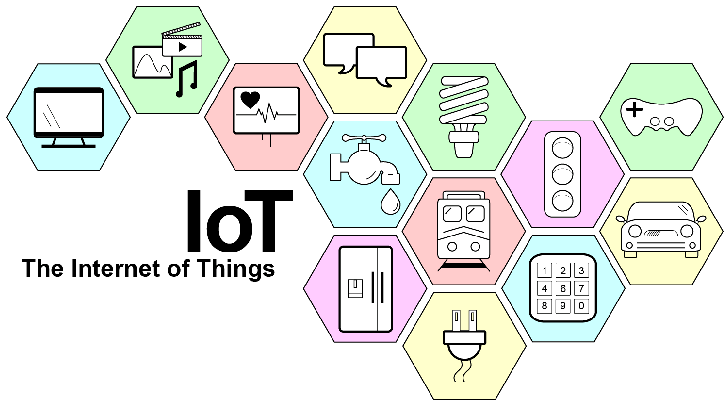
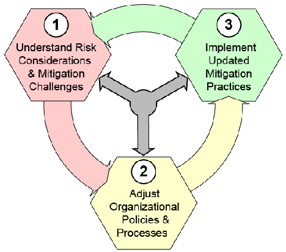
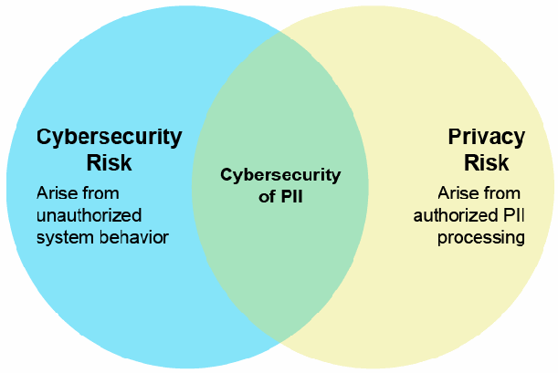
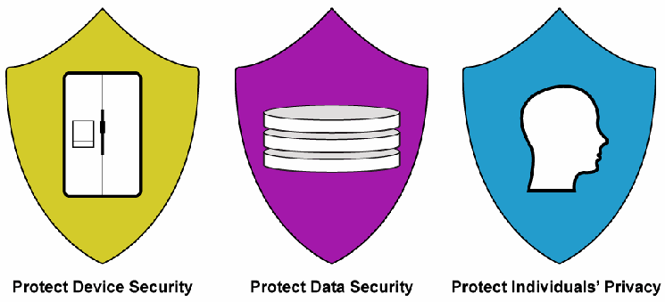
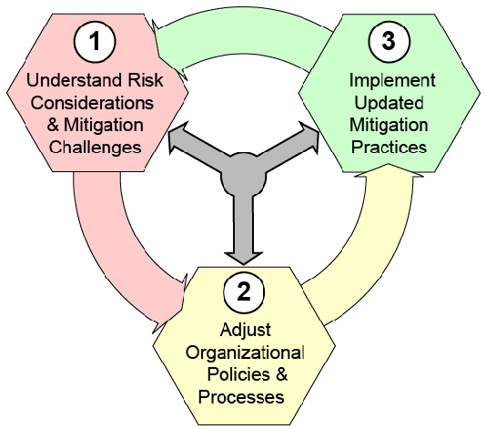

NIST IR 8228 日本語訳
英語タイトル : Considerations for Managing Internet of Things (IoT) Cybersecurity and Privacy Risks日本語タイトル : モノのインターネット（IoT）のサイバーセキュリティおよびプライバシーリスクを管理するための考慮事項
公開日 : 2019-06-25
原文URL : https://csrc.nist.gov/pubs/ir/8228/final
翻訳編集 : 自動生成（有志による非公式の日本語訳）, 原文取得日 : 2026-10-31, 訳文 : 282 / 283 ブロック
[要約] NIST IR 8228 は、個々のモノのインターネット（IoT）デバイスに関連するサイバーセキュリティリスクとプライバシーリスクを、デバイスのライフサイクル全体にわたって、組織がよりよく理解し管理できるよう支援する報告書です。コンシューマー向け、エンタープライズ向け、産業用の IoT デバイスを対象に、これらのリスクの管理が従来の情報技術（IT）デバイスの場合と何が異なるかを重点的に扱います。本書は、IoT デバイスの能力、リスクに関する 3 つの考慮事項、リスク低減における課題、それらに対処するための推奨事項を示しています。このテーマのより具体的な側面を扱う一連の刊行物（計画中）の土台となる導入文書と位置づけられています。
NISTIR 8228
NISTIR 8228
Considerations for Managing Internet of Things (IoT) Cybersecurity and Privacy Risks
モノのインターネット（IoT）のサイバーセキュリティおよびプライバシーリスクを管理するための考慮事項
Katie Boeckl Michael Fagan William Fisher Naomi Lefkovitz Katerina N. Megas Ellen Nadeau Danna Gabel O’Rourke Ben Piccarreta Karen Scarfone
Katie Boeckl Michael Fagan William Fisher Naomi Lefkovitz Katerina N. Megas Ellen Nadeau Danna Gabel O’Rourke Ben Piccarreta Karen Scarfone
This publication is available free of charge from:
本刊行物は次の場所から無料で入手できます。
https://doi.org/10.6028/NIST.IR.8228
https://doi.org/10.6028/NIST.IR.8228
［NIST のロゴ。公的な標章のため、この非公式サイトには掲載していません。原本 PDF を参照してください。］
NISTIR 8228
NISTIR 8228
Considerations for Managing Internet of Things (IoT) Cybersecurity and Privacy Risks
モノのインターネット（IoT）のサイバーセキュリティおよびプライバシーリスクを管理するための考慮事項
Katie Boeckl Michael Fagan William Fisher Naomi Lefkovitz Katerina N. Megas Ellen Nadeau Ben Piccarreta* Applied Cybersecurity Division Information Technology Laboratory
Katie Boeckl Michael Fagan William Fisher Naomi Lefkovitz Katerina N. Megas Ellen Nadeau Ben Piccarreta* Applied Cybersecurity Division Information Technology Laboratory
Danna Gabel O’Rourke Deloitte & Touche LLP Arlington, Virginia
Danna Gabel O’Rourke Deloitte & Touche LLP Arlington, Virginia
Karen Scarfone Scarfone Cybersecurity Clifton, Virginia
Karen Scarfone Scarfone Cybersecurity Clifton, Virginia
*Former employee; all work for this publication was done while at NIST
*元職員。本刊行物に関するすべての作業は NIST 在職中に行われました
This publication is available free of charge from:
本刊行物は次の場所から無料で入手できます。
https://doi.org/10.6028/NIST.IR.8228
https://doi.org/10.6028/NIST.IR.8228
June 2019
2019年6月
U.S. Department of Commerce Wilbur L. Ross, Jr., Secretary
米国商務省 Wilbur L. Ross, Jr. 長官
National Institute of Standards and Technology
国立標準技術研究所
Walter Copan, NIST Director and Under Secretary of Commerce for Standards and Technology
Walter Copan、NIST 所長兼商務次官（標準・技術担当）
National Institute of Standards and Technology Interagency or Internal Report 8228 44 pages (June 2019)
米国国立標準技術研究所 省庁間報告書または内部報告書 8228 44ページ（2019年6月）
This publication is available free of charge from: https://doi.org/10.6028/NIST.IR.8228
本刊行物は https://doi.org/10.6028/NIST.IR.8228 から無料で入手できます。
Certain commercial entities, equipment, or materials may be identified in this document in order to describe an experimental procedure or concept adequately. Such identification is not intended to imply recommendation or endorsement by NIST, nor is it intended to imply that the entities, materials, or equipment are necessarily the best available for the purpose.
本書では、実験的な手順や概念を適切に説明するために、特定の商業的主体、装置、または資材に言及する場合があります。こうした言及は、NIST による推奨や支持を意味するものではなく、それらの主体、資材、または装置がその目的に利用可能なもののうち必ずしも最良であることを意味するものでもありません。
There may be references in this publication to other publications currently under development by NIST in accordance with its assigned statutory responsibilities. The information in this publication, including concepts and methodologies, may be used by federal agencies even before the completion of such companion publications. Thus, until each publication is completed, current requirements, guidelines, and procedures, where they exist, remain operative. For planning and transition purposes, federal agencies may wish to closely follow the development of these new publications by NIST.
本刊行物では、NIST が法令上の責務に従って現在策定中のほかの刊行物に言及する場合があります。概念や方法論を含む本刊行物の情報は、そうした関連刊行物の完成前であっても、連邦機関が使用してもよいです。したがって、各刊行物が完成するまでは、現行の要件、ガイドライン、手順が存在する場合は、それらが引き続き有効です。計画および移行のため、連邦機関は、NIST によるこれらの新しい刊行物の策定状況を注意深く追うことを検討してもよいです。
Organizations are encouraged to review all draft publications during public comment periods and provide feedback to NIST. Many NIST cybersecurity publications, other than the ones noted above, are available at https://csrc.nist.gov/publications.
組織は、パブリックコメントの期間中にすべてのドラフト刊行物を確認し、NIST にフィードバックを提供すべきです。上記以外にも、NIST の多くのサイバーセキュリティ刊行物が https://csrc.nist.gov/publications で入手できます。
Comments on this publication may be submitted to:
本刊行物へのコメントは次の宛先に提出できます。
National Institute of Standards and Technology Attn: Applied Cybersecurity Division, Information Technology Laboratory 100 Bureau Drive (Mail Stop 2000) Gaithersburg, MD 20899-2000 Email: iotsecurity@nist.gov
National Institute of Standards and Technology Attn: Applied Cybersecurity Division, Information Technology Laboratory 100 Bureau Drive (Mail Stop 2000) Gaithersburg, MD 20899-2000 Email: iotsecurity@nist.gov
All comments are subject to release under the Freedom of Information Act (FOIA).
すべてのコメントは、情報自由法（FOIA）に基づく公開の対象となります。
Reports on Computer Systems Technology
コンピュータシステム技術に関する報告書
The Information Technology Laboratory (ITL) at the National Institute of Standards and Technology (NIST) promotes the U.S. economy and public welfare by providing technical leadership for the Nation’s measurement and standards infrastructure. ITL develops tests, test methods, reference data, proof of concept implementations, and technical analyses to advance the development and productive use of information technology. ITL’s responsibilities include the development of management, administrative, technical, and physical standards and guidelines for the cost-effective security and privacy of other than national security-related information in federal information systems.
米国国立標準技術研究所（NIST）の情報技術研究所（ITL）は、国の計測・標準インフラストラクチャに対する技術的なリーダーシップを提供することで、米国経済と公共の福祉を促進しています。ITL は、情報技術の開発と生産的な利用を進めるため、テスト、テスト手法、参照データ、概念実証の実装、および技術分析を開発しています。ITL の責務には、連邦情報システムにおける国家安全保障関連以外の情報について、費用対効果の高いセキュリティとプライバシーを実現するための、管理、運営、技術、および物理的な標準およびガイドラインの策定が含まれます。
Abstract
要旨
The Internet of Things (IoT) is a rapidly evolving and expanding collection of diverse technologies that interact with the physical world. Many organizations are not necessarily aware of the large number of IoT devices they are already using and how IoT devices may affect cybersecurity and privacy risks differently than conventional information technology (IT) devices do. The purpose of this publication is to help federal agencies and other organizations better understand and manage the cybersecurity and privacy risks associated with their individual IoT devices throughout the devices’ lifecycles. This publication is the introductory document providing the foundation for a planned series of publications on more specific aspects of this topic.
モノのインターネット（IoT）は、物理世界と相互作用する多様な技術の集合であり、急速に進化し拡大しています。多くの組織は、自らがすでに使用している膨大な数の IoT デバイスや、IoT デバイスが従来の情報技術（IT）デバイスとは異なる形でサイバーセキュリティリスクとプライバシーリスクにどのように影響を及ぼしうるかを、必ずしも認識していません。本刊行物の目的は、連邦機関およびその他の組織が、個々の IoT デバイスに関連するサイバーセキュリティリスクとプライバシーリスクを、デバイスのライフサイクル全体にわたって、よりよく理解し管理できるよう支援することです。本刊行物は、このテーマのより具体的な側面を扱う一連の刊行物（計画中）の土台となる、導入文書です。
Keywords
キーワード
cybersecurity risk; Internet of Things (IoT); privacy risk; risk management; risk mitigation.
サイバーセキュリティリスク、モノのインターネット（IoT）、プライバシーリスク、リスク管理、リスク低減。
Acknowledgments
謝辞
The authors wish to thank all contributors to this publication, including the participants in the workshops and other interactive sessions, the individuals and organizations from the public and private sectors who provided comments on the preliminary ideas, and the following individuals from NIST: Curt Barker, Matt Barrett, Barbara Cuthill, Donna Dodson, Jim Foti, Ned Goren, Nelson Hastings, Jody Jacobs, Suzanne Lightman, Jeff Marron, Vicky Pillitteri, Tim Polk, Matt Scholl, Eric Simmon, Matt Smith, Murugiah Souppaya, Jim St. Pierre, Kevin Stine, and David Wollman.
著者らは、ワークショップやその他の対話型セッションの参加者、予備的な構想に対してコメントを寄せた官民の個人および組織、ならびに次の NIST の職員を含む、本刊行物に貢献したすべての方々に感謝します。Curt Barker, Matt Barrett, Barbara Cuthill, Donna Dodson, Jim Foti, Ned Goren, Nelson Hastings, Jody Jacobs, Suzanne Lightman, Jeff Marron, Vicky Pillitteri, Tim Polk, Matt Scholl, Eric Simmon, Matt Smith, Murugiah Souppaya, Jim St. Pierre, Kevin Stine, および David Wollman。
Audience
想定読者
The primary audience for this publication is personnel at federal agencies with responsibilities related to managing cybersecurity and privacy risks for IoT devices, although personnel at other organizations may also find value in the content. Personnel within the following Workforce Categories and Specialty Areas from the National Initiative for Cybersecurity Education (NICE) Cybersecurity Workforce Framework [1] are most likely to find this publication of interest, as are their privacy counterparts:
本刊行物の主な想定読者は、IoT デバイスのサイバーセキュリティリスクとプライバシーリスクの管理に責任を持つ連邦機関の担当者ですが、ほかの組織の担当者にも有用な内容である可能性があります。National Initiative for Cybersecurity Education（NICE）サイバーセキュリティ人材フレームワーク [1] の次のワークフォースカテゴリーと専門分野に属する担当者、およびそれぞれに対応するプライバシー担当者は、本刊行物に最も関心を持つ可能性が高いです。
•Securely Provision (SP): Risk Management (RSK), Systems Architecture (ARC), Systems Development (SYS)
•Securely Provision（SP）: リスク管理（RSK）、システムアーキテクチャ（ARC）、システム開発（SYS）
•Operate and Maintain (OM): Data Administration (DTA), Network Services (NET), Systems Administration (ADM), Systems Analysis (ANA)
•Operate and Maintain（OM）: データ管理（DTA）、ネットワークサービス（NET）、システム管理（ADM）、システム分析（ANA）
•Oversee and Govern (OV): Cybersecurity Management (MGT), Executive Cyber Leadership (EXL), Program/Project Management (PMA) and Acquisition
•Oversee and Govern（OV）: サイバーセキュリティ管理（MGT）、サイバー分野のエグゼクティブリーダーシップ（EXL）、プログラム／プロジェクト管理（PMA）および調達
•Protect and Defend (PR): Cybersecurity Defense Analysis (CDA), Cybersecurity Defense Infrastructure Support (INF), Incident Response (CIR), Vulnerability Assessment and Management (VAM)
•Protect and Defend（PR）: サイバーセキュリティ防御分析（CDA）、サイバーセキュリティ防御インフラストラクチャ支援（INF）、インシデント対応（CIR）、脆弱性評価および管理（VAM）
•Investigate (IN): Digital Forensics (FOR)
•Investigate（IN）: デジタルフォレンジック（FOR）
In addition, IoT device manufacturers and integrators may find this publication useful for understanding concerns regarding managing cybersecurity and privacy risks for IoT devices.
さらに、IoT デバイスの製造者やインテグレーターにとっても、本刊行物は、IoT デバイスのサイバーセキュリティリスクとプライバシーリスクの管理に関する懸念事項を理解するうえで有用な場合があります。
Note to Readers
読者への注記
Appendix A previously held examples of possible cybersecurity and privacy capabilities that organizations may want their IoT devices to have. That content has been removed from this publication and will be refined and released in a separate publication.
付録 A には以前、組織が IoT デバイスに備えさせたいと考える可能性のあるサイバーセキュリティ能力とプライバシー能力の例が掲載されていました。その内容は本刊行物から削除されており、洗練されたうえで別の刊行物として公開される予定です。
Trademark Information
商標情報
All registered trademarks and trademarks belong to their respective organizations.
登録商標および商標はすべて、それぞれの組織に帰属します。
Executive Summary
エグゼクティブサマリー
The Internet of Things (IoT) is a rapidly evolving and expanding collection of diverse technologies that interact with the physical world. IoT devices are an outcome of combining the worlds of information technology (IT) and operational technology (OT). Many IoT devices are the result of the convergence of cloud computing, mobile computing, embedded systems, big data, low-price hardware, and other technological advances. IoT devices can provide computing functionality, data storage, and network connectivity for equipment that previously lacked them, enabling new efficiencies and technological capabilities for the equipment, such as remote access for monitoring, configuration, and troubleshooting. IoT can also add the abilities to analyze data about the physical world and use the results to better inform decision making, alter the physical environment, and anticipate future events.
モノのインターネット（IoT）は、物理世界と相互作用する多様な技術の集合であり、急速に進化し拡大しています。IoT デバイスは、情報技術（IT）と運用技術（OT）の世界を組み合わせた成果です。多くの IoT デバイスは、クラウドコンピューティング、モバイルコンピューティング、組込みシステム、ビッグデータ、低価格のハードウェア、その他の技術的進歩が融合した結果です。IoT デバイスは、これまで計算機能、データストレージ、ネットワーク接続を持たなかった機器にそれらを提供でき、監視、設定、トラブルシューティングのためのリモートアクセスなど、機器に新たな効率性と技術的能力をもたらします。IoT はまた、物理世界に関するデータを分析し、その結果を意思決定の改善、物理環境の変更、将来の出来事の予測に役立てる能力を加えることもできます。

「IoT」「The Internet of Things」の文字を、接続された機器やサービスのアイコン（テレビ、メディア再生、医療用モニター、吹き出し、電球、水道の蛇口、信号機、ゲームコントローラー、自動車、列車、キーパッド、冷蔵庫、電源プラグなど）を入れた色付きの六角形が囲んでいる挿絵です。
While the full scope of IoT is not precisely defined, it is clearly vast. Every sector has its own types of IoT devices, such as specialized hospital equipment in the healthcare sector and smart road technologies in the transportation sector, and there is a large number of enterprise IoT devices that every sector can use. Versions of nearly every consumer electronics device, many of which are also present in organizations’ facilities, have become connected IoT devices—kitchen appliances, thermostats, home security cameras, door locks, light bulbs, and TVs. [2]
IoT の全体像は正確には定義されていませんが、明らかに広大です。どの分野にも固有の種類の IoT デバイスがあり、たとえば医療分野の専用病院機器や運輸分野のスマート道路技術があるほか、あらゆる分野で使用できる多数のエンタープライズ IoT デバイスがあります。ほぼすべての家電製品に、ネットワークに接続された IoT デバイスの版が登場しており、その多くは組織の施設にも存在します。たとえば、台所用品、サーモスタット、家庭用防犯カメラ、ドアロック、電球、テレビなどです。[2]
Many organizations are not necessarily aware they are using a large number of IoT devices. It is important that organizations understand their use of IoT because many IoT devices affect cybersecurity and privacy risks differently than conventional IT devices do. Once organizations are aware of their existing IoT usage and possible future usage, they need to understand how the characteristics of IoT affect managing cybersecurity and privacy risks, especially in terms of risk response—accepting, avoiding, mitigating, sharing, or transferring risk.
多くの組織は、自らが多数の IoT デバイスを使用していることを必ずしも認識していません。多くの IoT デバイスは従来の IT デバイスとは異なる形でサイバーセキュリティリスクとプライバシーリスクに影響を及ぼすため、組織が自らの IoT の使用状況を理解することは重要です。組織は、既存の IoT の使用状況と将来起こりうる使用状況を認識したうえで、IoT の特性がサイバーセキュリティリスクとプライバシーリスクの管理に、特にリスク対応（リスクの受容、回避、低減、共有、または移転）の面でどのような影響を及ぼすかを理解する必要があります。
This publication identifies three high-level considerations that may affect the management of cybersecurity and privacy risks for IoT devices as compared to conventional IT devices:
本刊行物は、従来の IT デバイスと比較して、IoT デバイスのサイバーセキュリティリスクとプライバシーリスクの管理に影響を及ぼしうる、3 つの高レベルな考慮事項を特定しています。
1.Many IoT devices interact with the physical world in ways conventional IT devices usually do not. The potential impact of some IoT devices making changes to physical systems and thus affecting the physical world needs to be explicitly recognized and addressed from cybersecurity and privacy perspectives. Also, operational requirements for performance, reliability, resilience, and safety may be at odds with common cybersecurity and privacy practices for conventional IT devices.
1.多くの IoT デバイスは、従来の IT デバイスが通常は行わない形で物理世界と相互作用します。IoT デバイスの中には、物理システムに変更を加え、それによって物理世界に影響を及ぼすものがあり、その潜在的な影響を、サイバーセキュリティとプライバシーの観点から明示的に認識し、対処する必要があります。また、性能、信頼性、レジリエンス、安全性に関する運用上の要件は、従来の IT デバイスに対する一般的なサイバーセキュリティおよびプライバシーのプラクティスと相反する場合があります。
2.Many IoT devices cannot be accessed, managed, or monitored in the same ways conventional IT devices can. This can necessitate doing tasks manually for large numbers of IoT devices, expanding staff knowledge and tools to include a much wider variety of IoT device software, and addressing risks with manufacturers and other third parties having remote access or control over IoT devices.
2.多くの IoT デバイスは、従来の IT デバイスと同じ方法ではアクセス、管理、監視できません。そのため、多数の IoT デバイスに対する作業を手作業で行う必要が生じたり、はるかに多様な IoT デバイスのソフトウェアを含むようにスタッフの知識とツールを拡張する必要が生じたり、IoT デバイスにリモートアクセスまたは制御を行う製造者やその他のサードパーティとの間でリスクに対処する必要が生じたりする場合があります。
3.The availability, efficiency, and effectiveness of cybersecurity and privacy capabilities are often different for IoT devices than conventional IT devices. This means organizations may have to select, implement, and manage additional controls, as well as determine how to respond to risk when sufficient controls for mitigating risk are not available.
3.サイバーセキュリティ能力とプライバシー能力の可用性、効率性、有効性は、多くの場合、従来の IT デバイスと IoT デバイスで異なります。これは、組織が追加の管理策を選択、実装、管理しなければならない場合があること、およびリスクを低減するための十分な管理策が利用できない場合にリスクへどう対応するかを決定しなければならない場合があることを意味します。
Cybersecurity and privacy risks for IoT devices can be thought of in terms of three high-level risk mitigation goals:
IoT デバイスのサイバーセキュリティリスクとプライバシーリスクは、3 つの高レベルなリスク低減目標の観点から捉えることができます。
1.Protect device security. In other words, prevent a device from being used to conduct attacks, including participating in distributed denial of service (DDoS) attacks against other organizations, and eavesdropping on network traffic or compromising other devices on the same network segment. This goal applies to all IoT devices.
1.デバイスのセキュリティを保護します。つまり、デバイスが攻撃の実行に使われることを防ぎます。これには、ほかの組織に対する分散型サービス拒否（DDoS）攻撃への加担、ネットワークトラフィックの盗聴、同じネットワークセグメント上のほかのデバイスの侵害が含まれます。この目標はすべての IoT デバイスに当てはまります。
2.Protect data security. Protect the confidentiality, integrity, and/or availability of data (including personally identifiable information [PII]) collected by, stored on, processed by, or transmitted to or from the IoT device. This goal applies to each IoT device except those without any data that needs protection.
2.データのセキュリティを保護します。IoT デバイスが収集、保存、処理するデータ、およびデバイスとの間で送受信されるデータ（個人を特定できる情報［PII］を含む）の機密性、完全性、または可用性（あるいはそのすべて）を保護します。この目標は、保護が必要なデータをまったく持たないものを除く、すべての IoT デバイスに当てはまります。
3.Protect individuals’ privacy. Protect individuals’ privacy impacted by PII processing beyond risks managed through device and data security protection. This goal applies to all IoT devices that process PII or that directly or indirectly impact individuals.
3.個人のプライバシーを保護します。デバイスおよびデータのセキュリティ保護によって管理されるリスクを超えて、PII の処理によって影響を受ける個人のプライバシーを保護します。この目標は、PII を処理する、または個人に直接的もしくは間接的に影響を及ぼすすべての IoT デバイスに当てはまります。
Each goal builds on the previous goal and does not replace it or negate the need for it. Meeting each of the risk mitigation goals involves addressing a set of risk mitigation areas. Each risk mitigation area defines an aspect of cybersecurity or privacy risk mitigation thought to be most significantly or unexpectedly affected for IoT by the risk considerations. For each risk mitigation area, there are one or more expectations organizations usually have for how conventional IT devices help mitigate cybersecurity and privacy risks for the area. Finally, there are one or more challenges that IoT devices may pose to each expectation. The figure below depicts the end result of these linkages, which is the identification of a structured set of potential challenges with mitigating cybersecurity and privacy risk for IoT devices that can each be traced back to the relevant risk considerations.
各目標は前の目標の上に成り立つものであり、前の目標に取って代わったり、その必要性を否定したりするものではありません。各リスク低減目標を達成するには、一連のリスク低減領域に対処する必要があります。各リスク低減領域は、リスクに関する考慮事項によって IoT において最も大きく、または予想外に影響を受けると考えられる、サイバーセキュリティまたはプライバシーのリスク低減の一側面を定義します。各リスク低減領域には、従来の IT デバイスがその領域のサイバーセキュリティリスクとプライバシーリスクの低減にどのように役立つかについて、組織が通常抱く期待が 1 つ以上あります。そして最後に、IoT デバイスが各期待に対してもたらしうる課題が 1 つ以上あります。下の図は、これらの関連付けの最終結果を示しており、IoT デバイスのサイバーセキュリティリスクとプライバシーリスクを低減するうえでの潜在的な課題の構造化された集合を特定しています。これらの課題はそれぞれ、関連するリスクに関する考慮事項までさかのぼることができます。
![Diagram of four linked stages drawn as hexagons with icons. Risk Considerations (head icon): "Why and how IoT devices impact the management of cybersecurity & privacy risks". Risk Mitigation Goals & Areas (target icon): "Which types of cybersecurity & privacy risks matter for IoT devices & may be most affected by Risk Considerations". Expectations (checklist icon): "How organizations expect conventional IT devices to help mitigate cybersecurity & privacy risks for the Risk Mitigation Goals & Areas". Challenges (maze icon): "What challenges IoT devices may pose to the Expectations & what the implications of those challenges are".](assets/ir-8228/p0008-figure-01.png)
アイコン付きの六角形で4つの段階のつながりを示す図です。Risk Considerations（リスクの考慮事項、頭部のアイコン）:「IoT デバイスがサイバーセキュリティとプライバシーのリスクの管理になぜ、どのように影響するか」。Risk Mitigation Goals & Areas（リスク軽減の目標と領域、的のアイコン）:「IoT デバイスにとってどの種類のサイバーセキュリティとプライバシーのリスクが重要で、リスクの考慮事項の影響を最も受けやすいか」。Expectations（期待、チェックリストのアイコン）:「リスク軽減の目標と領域について、組織が従来の IT デバイスにサイバーセキュリティとプライバシーのリスクの軽減をどのように期待しているか」。Challenges（課題、迷路のアイコン）:「IoT デバイスが期待に対してどのような課題をもたらし得るか、その課題の影響は何か」。

矢印でつながった3つの六角形の循環図です。1「リスクの考慮事項と軽減の課題を理解する」、2「組織の方針とプロセスを調整する」、3「更新した軽減策を実施する」。中央の三方向の矢印が3つすべてを指しています。
Organizations should ensure they are addressing the cybersecurity and privacy risk considerations and challenges throughout the IoT device lifecycle for the appropriate risk mitigation goals and areas. This publication provides the following recommendations for accomplishing this:
組織は、適切なリスク低減目標と領域について、IoT デバイスのライフサイクル全体にわたり、サイバーセキュリティとプライバシーのリスクに関する考慮事項と課題に確実に対処すべきです。本刊行物は、これを達成するために次の推奨事項を示します。
1.Understand the IoT device risk considerations and the challenges they may cause to mitigating cybersecurity and privacy risks for IoT devices in the appropriate risk mitigation areas.
1.IoT デバイスのリスクに関する考慮事項と、それらが適切なリスク低減領域で IoT デバイスのサイバーセキュリティリスクとプライバシーリスクの低減に及ぼしうる課題を理解します。
2.Adjust organizational policies and processes to address the cybersecurity and privacy risk mitigation challenges throughout the IoT device lifecycle. This publication cites many examples of possible challenges, but each organization will need to customize these to take into account its mission requirements and other organization-specific characteristics.
2.IoT デバイスのライフサイクル全体にわたるサイバーセキュリティおよびプライバシーのリスク低減上の課題に対処するため、組織のポリシーとプロセスを調整します。本刊行物は起こりうる課題の例を多数挙げていますが、各組織は、自らの任務要件やその他の組織固有の特性を考慮して、これらをカスタマイズする必要があります。
3.Implement updated mitigation practices for the organization’s IoT devices as you would any other changes to practices.
3.組織の IoT デバイスに対する更新後の低減プラクティスを、そのほかのプラクティスの変更と同様に実装します。
Table of Contents
目次
List of Appendices
付録の一覧
List of Figures
図の一覧
List of Tables
表の一覧
1 Introduction
1 はじめに
1.1 Purpose and Scope
1.1 目的と範囲
The purpose of this publication is to help organizations better understand and manage the cybersecurity and privacy risks associated with individual Internet of Things (IoT) devices throughout the devices’ lifecycles. This publication emphasizes what makes managing these risks different for IoT devices in general, including consumer, enterprise, and industrial IoT devices, than conventional information technology (IT) devices. It omits all aspects of risk management that are largely the same for IoT and conventional IT, including all aspects of risk management beyond the IoT devices themselves, because these are already addressed by many other risk management publications.
本刊行物の目的は、組織が、個々のモノのインターネット（IoT）デバイスに関連するサイバーセキュリティリスクとプライバシーリスクを、デバイスのライフサイクル全体にわたって、よりよく理解し管理できるよう支援することです。本刊行物は、コンシューマー向け、エンタープライズ向け、産業用の IoT デバイスを含む IoT デバイス全般について、これらのリスクの管理が従来の情報技術（IT）デバイスの場合と何が異なるかを重点的に扱います。IoT デバイス自体の範囲を超えるリスク管理のあらゆる側面を含め、IoT と従来の IT でほぼ同じであるリスク管理の側面は、ほかの多くのリスク管理刊行物ですでに扱われているため、すべて省いています。
The publication provides insights to inform organizations’ risk management processes. After reading this publication, an organization should be able to improve the quality of its risk assessments for IoT devices and its response to the identified risk through the lens of cybersecurity and privacy. However, this does not mean cybersecurity and privacy risks for an IoT device can all be addressed within the device itself. Every IoT device operates within a broader IoT environment where it interacts with other IoT and non-IoT devices, cloud-based services, people, and other components.
本刊行物は、組織のリスク管理プロセスに情報を提供する知見を示します。本刊行物を読めば、組織は、サイバーセキュリティとプライバシーの観点から、IoT デバイスのリスクアセスメントの質を高め、特定されたリスクへの対応を改善できるはずです。ただし、これは、IoT デバイスのサイバーセキュリティリスクとプライバシーリスクのすべてをデバイス自体の中で対処できるという意味ではありません。すべての IoT デバイスは、より広範な IoT 環境の中で動作し、その中でほかの IoT デバイスや非 IoT デバイス、クラウドベースのサービス、人、その他のコンポーネントと相互作用します。
For some IoT devices, additional types of risks, including safety, reliability, and resiliency, need to be managed simultaneously with cybersecurity and privacy risks because of the effects addressing one type of risk can have on others. Only cybersecurity and privacy risks are in scope for this publication. Readers who are particularly interested in better understanding other types of risks and their relationship to cybersecurity and privacy may benefit from reading NIST Special Publication (SP) 800-82 Revision 2, Guide to Industrial Control Systems (ICS) Security, which provides an operational technology (OT) perspective on cybersecurity and privacy. [3]
一部の IoT デバイスでは、ある種類のリスクへの対処がほかの種類のリスクに影響を及ぼしうるため、安全性、信頼性、レジリエンスなどの追加の種類のリスクを、サイバーセキュリティリスクおよびプライバシーリスクと同時に管理する必要があります。本刊行物の対象範囲は、サイバーセキュリティリスクとプライバシーリスクのみです。ほかの種類のリスクとそれらがサイバーセキュリティおよびプライバシーとどう関係するかをより深く理解したい読者は、運用技術（OT）の観点からサイバーセキュリティとプライバシーを論じている NIST Special Publication（SP）800-82 Revision 2『Guide to Industrial Control Systems (ICS) Security』を読むと役立つ場合があります。[3]
Readers do not need a technical understanding of IoT device composition and capabilities, but a basic understanding of cybersecurity and privacy principles is expected.
読者に、IoT デバイスの構成と能力に関する技術的な理解は求められませんが、サイバーセキュリティとプライバシーの原則に関する基本的な理解が前提となります。
1.2 Publication Structure
1.2 刊行物の構成
The remainder of this publication is organized into the following major sections and appendices:
本刊行物の残りの部分は、次の主要な節と付録で構成されています。
•Section 2 defines capabilities IoT devices can provide that are of primary interest in terms of potentially affecting cybersecurity and privacy risk.
•第 2 節では、サイバーセキュリティリスクとプライバシーリスクに影響しうるという点で主な関心対象となる、IoT デバイスが提供できる能力を定義します。
•Section 3 describes considerations that may affect the management of cybersecurity and privacy risks for IoT devices.
•第 3 節では、IoT デバイスのサイバーセキュリティリスクとプライバシーリスクの管理に影響しうる考慮事項を説明します。
•Section 4 explores how the risk considerations may affect mitigating cybersecurity and privacy risk for IoT devices. The section lists expectations for how these risks are mitigated in conventional IT environments, then explains how IoT presents challenges to those expectations and what the potential implications of those challenges are.
•第 4 節では、リスクに関する考慮事項が、IoT デバイスのサイバーセキュリティリスクとプライバシーリスクの低減にどのように影響しうるかを検討します。この節では、従来の IT 環境でこれらのリスクがどのように低減されるかについての期待を列挙したうえで、IoT がそれらの期待にどのような課題をもたらすか、およびそれらの課題が潜在的にどのような影響を持つかを説明します。
•Section 5 provides recommendations for organizations on how to address the cybersecurity and privacy risk mitigation challenges for their IoT devices.
•第 5 節では、組織が自らの IoT デバイスのサイバーセキュリティおよびプライバシーのリスク低減上の課題にどう対処するかについて、推奨事項を示します。
•Appendix A previously held examples of possible cybersecurity and privacy capabilities that organizations may want their IoT devices to have. That content has been removed from this publication and will be refined and released in a separate publication.
•付録 A には以前、組織が IoT デバイスに備えさせたいと考える可能性のあるサイバーセキュリティ能力とプライバシー能力の例が掲載されていました。その内容は本刊行物から削除されており、洗練されたうえで別の刊行物として公開される予定です。
•Appendix B provides an acronym and abbreviation list.
•付録 B は、頭字語および略語の一覧です。
•Appendix C contains a glossary of selected terms used in the publication.
•付録 C は、本刊行物で使用している選択した用語の用語集です。
•Appendix D lists the references for the publication.
•付録 D は、本刊行物の参考文献を列挙しています。
Figure 1 depicts the topics covered in each section and subsection of this publication.
図 1 は、本刊行物の各節および各項で扱うトピックを示しています。
![Diagram drawn as a winding road that starts beside a cluster of hexagons with IoT device icons and runs through the sections of the publication: "2 IoT Device Capabilities"; "3 Cybersecurity & Privacy Risk Considerations" with "3.1 Device Interactions with the Physical World", "3.2 Device Access, Management & Monitoring Features", "3.3 Cybersecurity & Privacy Capability Availability, Efficiency & Effectiveness"; "4 Challenges with Cybersecurity & Privacy Risk Mitigation for IoT Devices" with "4.1 Potential Challenges with Achieving Goal 1, Protect Device Security", "4.2 Potential Challenges with Achieving Goal 2, Protect Data Security", "4.3 Potential Challenges with Achieving Goal 3, Protect Individuals' Privacy"; and "5 Recommendations for Addressing Cybersecurity & Privacy Risk Mitigation Challenges for IoT Devices" with "5.1 Adjusting Organizational Policies & Processes" and "5.2 Implementing Updated Risk Mitigation Practices".](assets/ir-8228/p0012-figure-01.png)
IoT デバイスのアイコンを入れた六角形の集まりのそばから始まり、本刊行物の各節を通って進む曲がりくねった道として描かれた図です。「2 IoT デバイスの能力」；「3 サイバーセキュリティとプライバシーのリスクに関する考慮事項」（「3.1 デバイスと物理世界との相互作用」、「3.2 デバイスのアクセス・管理・監視機能」、「3.3 サイバーセキュリティとプライバシーの能力の可用性・効率・有効性」）；「4 IoT デバイスのサイバーセキュリティとプライバシーのリスク低減における課題」（「4.1 目標 1 の達成における潜在的な課題：デバイスのセキュリティを保護する」、「4.2 目標 2 の達成における潜在的な課題：データのセキュリティを保護する」、「4.3 目標 3 の達成における潜在的な課題：個人のプライバシーを保護する」）；および「5 IoT デバイスのサイバーセキュリティとプライバシーのリスク低減における課題に対処するための推奨事項」（「5.1 組織のポリシーとプロセスの調整」および「5.2 更新後のリスク低減プラクティスの実装」）。
Figure 1: Topics Covered in This Publication
図 1：本刊行物で扱うトピック
2 IoT Device Capabilities
2 IoT デバイスの能力
Each IoT device provides capabilities—features or functions—it can use on its own or in conjunction with other IoT and non-IoT devices to achieve one or more goals. This publication references the following types of capabilities IoT devices can provide that are of primary interest in terms of potentially affecting cybersecurity and privacy risk differently than conventional IT devices. This is not a comprehensive list of all possible IoT device capabilities.
各 IoT デバイスは、単独で、またはほかの IoT デバイスや非 IoT デバイスと連携して、1 つ以上の目標を達成するために使用できる能力（機能または働き）を提供します。本刊行物では、従来の IT デバイスとは異なる形でサイバーセキュリティリスクとプライバシーリスクに影響しうるという点で主な関心対象となる、IoT デバイスが提供できる次の種類の能力を参照します。これは、IoT デバイスのあらゆる能力を網羅した一覧ではありません。
•Transducer capabilities interact with the physical world and serve as the edge between digital and physical environments. Transducer capabilities provide the ability for computing devices to interact directly with physical entities of interest. Every IoT device has at least one transducer capability. The two types of transducer capabilities are:
•トランスデューサー能力は、物理世界と相互作用し、デジタル環境と物理環境の境界（エッジ）の役割を果たします。トランスデューサー能力により、コンピューティングデバイスは、対象となる物理的実体と直接相互作用できます。すべての IoT デバイスは、少なくとも 1 つのトランスデューサー能力を持ちます。トランスデューサー能力には 2 つの種類があります。
•Sensing: the ability to provide an observation of an aspect of the physical world in the form of measurement data. Examples include temperature measurement, radiographic imaging, optical sensing, and audio sensing.
•センシング：物理世界のある側面の観測結果を、測定データの形で提供する能力。例として、温度測定、放射線画像撮影、光学センシング、音声センシングがあります。
•Actuating: the ability to change something in the physical world. Examples of actuating capabilities include heating coils, cardiac electric shock delivery, electronic door locks, unmanned aerial vehicle operation, servo motors, and robotic arms.
•アクチュエーション：物理世界の何かを変化させる能力。アクチュエーション能力の例には、加熱コイル、心臓への電気ショックの付与、電子ドアロック、無人航空機の操作、サーボモーター、ロボットアームがあります。
•Interface capabilities enable device interactions (e.g., device-to-device communications, human-to-device communications). The types of interface capabilities are:
•インターフェース能力は、デバイスの相互作用（たとえば、デバイス間通信、人とデバイスの間の通信）を可能にします。インターフェース能力の種類は次のとおりです。
•Application interface: the ability for other computing devices to communicate with an IoT device through an IoT device application. An example of an application interface capability is an application programming interface (API).
•アプリケーションインターフェース：ほかのコンピューティングデバイスが、IoT デバイスのアプリケーションを通じて IoT デバイスと通信できる能力。アプリケーションインターフェース能力の例は、アプリケーションプログラミングインターフェース（API）です。
•Human user interface: the ability for an IoT device and people to communicate directly with each other. Examples of human user interface capabilities include touch screens, haptic devices, microphones, cameras, and speakers.
•ヒューマンユーザーインターフェース：IoT デバイスと人が互いに直接通信できる能力。ヒューマンユーザーインターフェース能力の例には、タッチスクリーン、触覚デバイス、マイク、カメラ、スピーカーがあります。
•Network interface: the ability to interface with a communication network for the purpose of communicating data to or from an IoT device—in other words, to use a communication network. A network interface capability includes both hardware and software (e.g., a network interface card or chip and the software implementation of the networking protocol that uses the card or chip). Examples of network interface capabilities include Ethernet, Wi-Fi, Bluetooth, Long-Term Evolution (LTE), and ZigBee. Every IoT device has at least one enabled network interface capability and may have more than one.
•ネットワークインターフェース：IoT デバイスとの間でデータを通信する目的で、つまり通信ネットワークを使用する目的で、通信ネットワークとインターフェースする能力。ネットワークインターフェース能力には、ハードウェアとソフトウェアの両方（たとえば、ネットワークインターフェースカードまたはチップと、そのカードまたはチップを使用するネットワークプロトコルのソフトウェア実装）が含まれます。ネットワークインターフェース能力の例には、Ethernet、Wi-Fi、Bluetooth、Long-Term Evolution（LTE）、ZigBee があります。すべての IoT デバイスは、有効化されたネットワークインターフェース能力を少なくとも 1 つ持ち、複数持つ場合もあります。
•Supporting capabilities provide functionality that supports the other IoT capabilities. Examples are device management, cybersecurity, and privacy capabilities. [2]
•サポート能力は、ほかの IoT 能力を支える機能を提供します。例として、デバイス管理、サイバーセキュリティ、プライバシーの各能力があります。[2]
Figure 2 summarizes these IoT device capabilities.
図 2 は、これらの IoT デバイスの能力をまとめたものです。

黒い見出しとアイコンのある縦長の六角形のパネル3枚です。「Transducer Capabilities」（トランスデューサー機能）: Sensing（センシング。波を出すセンサー）、Actuating（アクチュエーティング。電源記号）。「Interface Capabilities」（インターフェース機能）: Application Interface（アプリケーションインターフェース。API とレンチ）、Human User Interface（ヒューマンユーザーインターフェース。ボタンを押す指）、Network Interface（ネットワークインターフェース。ネットワークの木構造）。「Supporting Capabilities Examples」（支援機能の例）: Device Management（デバイス管理。歯車付きのタブレット）、Cybersecurity Capabilities（サイバーセキュリティ機能。ノードにつながった南京錠）、Privacy Capabilities（プライバシー機能。鍵穴のある盾）。
Figure 2: IoT Device Capabilities Potentially Affecting Cybersecurity and Privacy Risk
図 2：サイバーセキュリティリスクとプライバシーリスクに影響しうる IoT デバイスの能力
3 Cybersecurity and Privacy Risk Considerations
3 サイバーセキュリティおよびプライバシーのリスクに関する考慮事項
Cybersecurity risk and privacy risk are related but distinct concepts. Risk is defined in NIST SP 800-37 Revision 2 as “a measure of the extent to which an entity is threatened by a potential circumstance or event, and typically is a function of: (i) the adverse impact, or magnitude of harm, that would arise if the circumstance or event occurs; and (ii) the likelihood of occurrence.” [4] For cybersecurity, risk is about threats—the exploitation of vulnerabilities by threat actors to compromise device or data confidentiality, integrity, or availability. For privacy, risk is about problematic data actions—operations that process personally identifiable information (PII) through the information lifecycle to meet mission or business needs of an organization or “authorized” PII processing and, as a side effect, cause individuals to experience some type of problem(s). As Figure 3 depicts, privacy and cybersecurity risk overlap with respect to concerns about the cybersecurity of PII, but there are also privacy concerns without implications for cybersecurity, and cybersecurity concerns without implications for privacy. [5]
サイバーセキュリティリスクとプライバシーリスクは、関連はあるものの別個の概念です。リスクは NIST SP 800-37 Revision 2 で「エンティティが潜在的な状況または事象によって脅かされる程度の尺度であり、通常は次の関数です。(i) その状況または事象が発生した場合に生じる悪影響、すなわち被害の大きさ、(ii) 発生の可能性」と定義されています。[4] サイバーセキュリティにおけるリスクは脅威に関するものであり、脅威アクターが脆弱性を悪用して、デバイスまたはデータの機密性、完全性、可用性を侵害することを指します。プライバシーにおけるリスクは問題のあるデータ行為に関するものであり、組織の任務または業務上のニーズを満たすために、情報ライフサイクルを通じて個人を特定できる情報（PII）を処理する操作、つまり「認可された」PII の処理が、副作用として、個人に何らかの問題を経験させることを指します。図 3 に示すように、プライバシーリスクとサイバーセキュリティリスクは、PII のサイバーセキュリティに関する懸念の点で重なりますが、サイバーセキュリティに影響を及ぼさないプライバシー上の懸念や、プライバシーに影響を及ぼさないサイバーセキュリティ上の懸念もあります。[5]

2つの円が重なるベン図です。左の円は「Cybersecurity Risk（サイバーセキュリティリスク）: 認可されていないシステムの挙動から生じる」、右の円は「Privacy Risk（プライバシーリスク）: 認可された PII の処理から生じる」で、重なった部分は「Cybersecurity of PII（PII のサイバーセキュリティ）」です。
Figure 3: Relationship Between Cybersecurity and Privacy Risks
図 3：サイバーセキュリティリスクとプライバシーリスクの関係
IoT devices generally face the same types of cybersecurity and privacy risks as conventional IT devices, though the prevalence and severity of such risks often differ. For example, data security risks are almost always a significant concern for conventional IT devices, but for some IoT devices, there may not be data security risks because they do not have any data that needs protection.
IoT デバイスは一般に、従来の IT デバイスと同じ種類のサイバーセキュリティリスクとプライバシーリスクに直面しますが、そうしたリスクの発生頻度と深刻度は異なることが多くあります。たとえば、従来の IT デバイスではデータセキュリティリスクがほぼ常に重大な懸念事項となりますが、IoT デバイスの中には、保護が必要なデータを持たないためにデータセキュリティリスクが存在しない場合もあります。
This section defines three cybersecurity and privacy risk considerations that may affect the management of cybersecurity and privacy risks for IoT devices. Organizations should ensure they are addressing these risk considerations throughout the lifecycle of their IoT devices. Section 4 provides more information on how these risk considerations may affect risk mitigation, and Section 5 provides recommendations for organizations on how to address the risk mitigation challenges.
この節では、IoT デバイスのサイバーセキュリティリスクとプライバシーリスクの管理に影響しうる、サイバーセキュリティおよびプライバシーのリスクに関する 3 つの考慮事項を定義します。組織は、IoT デバイスのライフサイクル全体にわたって、これらのリスクに関する考慮事項に確実に対処すべきです。第 4 節では、これらのリスクに関する考慮事項がリスク低減にどのように影響しうるかについて詳しく説明し、第 5 節では、組織がリスク低減上の課題にどう対処するかについて推奨事項を示します。
3.1 Consideration 1: Device Interactions with the Physical World
3.1 考慮事項 1：デバイスと物理世界との相互作用
Many IoT devices interact with the physical world in ways conventional IT devices usually do not.
多くの IoT デバイスは、従来の IT デバイスが通常は行わない形で物理世界と相互作用します。
The interactions with the physical world that IoT devices enable may affect cybersecurity and privacy risks in several ways. Here are examples:
IoT デバイスが可能にする物理世界との相互作用は、いくつかの形でサイバーセキュリティリスクとプライバシーリスクに影響を及ぼしうるものです。次に例を示します。
•IoT sensor data, representing measurements of the physical world, always has uncertainties associated with it. Effective management of IoT sensor data, including understanding uncertainties, is necessary to assess data quality and meaning so the organization can make decisions regarding the data’s use and avoid introducing new risks. Without this, error rates may be unknown for the different contexts in which an IoT device might be used.1 Effective IoT sensor data management is important when mitigating physical attacks on sensor technology, such as attacks performed through wireless signals, that could cause sensors to produce false results.
•物理世界の測定値を表す IoT センサーデータには、常に不確かさが伴います。不確かさの理解を含む IoT センサーデータの効果的な管理は、データの品質と意味を評価し、組織がデータの使用について判断を下して新たなリスクの持ち込みを避けるために必要です。これがなければ、IoT デバイスが使用されうるさまざまな状況での誤り率が不明なままになる可能性があります。1 効果的な IoT センサーデータの管理は、センサー技術に対する物理的な攻撃、たとえば無線信号を介して行われ、センサーに誤った結果を出力させうる攻撃を低減するうえで重要です。
•The ubiquity of IoT sensors in public and private environments can contribute to the aggregation and analysis of enormous amounts of data about individuals. These activities can be used to influence individuals’ behavior or decision-making in ways they do not understand, or lead to information being revealed that individuals did not want revealed, including the re-identification of previously de-identified PII—and may be beyond the originally intended scope of the IoT device’s operation.
•公共および私的な環境に IoT センサーが遍在していることは、個人に関する膨大な量のデータの集約と分析につながりえます。こうした活動は、個人が理解していない形でその行動や意思決定に影響を与えるために利用されたり、以前に匿名化された PII の再識別を含め、個人が明らかにされたくなかった情報が明らかになる事態につながったりする可能性があり、IoT デバイスの動作として当初意図された範囲を超える場合もあります。
•IoT devices with actuators have the ability to make changes to physical systems and thus affect the physical world. The potential impact of this needs to be explicitly recognized and addressed from cybersecurity and privacy perspectives. In a worst-case scenario, a compromise could allow an attacker to use an IoT device to endanger human safety, damage or destroy equipment and facilities, or cause major operational disruptions. Privacy concerns and related civil liberties concerns could arise through authorized changes to physical systems that could impact individuals’ physical autonomy or behavior in personal and public spaces. For example, physical access controls, such as automated door locks, could be used to limit access to rooms or buildings with individuals inside, or environmental controls such as lighting or temperature could be used to influence individuals’ movement in buildings.
•アクチュエーターを備えた IoT デバイスは、物理システムに変更を加え、それによって物理世界に影響を及ぼす能力を持っています。その潜在的な影響を、サイバーセキュリティとプライバシーの観点から明示的に認識し、対処する必要があります。最悪の場合、侵害によって、攻撃者が IoT デバイスを使って人間の安全を脅かしたり、機器や施設に損害を与えたり破壊したり、大規模な運用の中断を引き起こしたりできるようになる可能性があります。個人の物理的な自律性や、私的空間および公共空間での行動に影響を及ぼしうる、物理システムへの認可された変更を通じて、プライバシー上の懸念や、それに関連する市民的自由に関する懸念が生じる場合もあります。たとえば、自動ドアロックなどの物理的アクセス制御は、人が中にいる部屋や建物へのアクセスを制限するために使われる可能性があり、照明や温度などの環境制御は、建物内での人の動きに影響を与えるために使われる可能性があります。
•IoT network interfaces often enable remote access to physical systems that previously could only be accessed locally. Manufacturers, vendors, and other third parties may be able to use remote access to IoT devices for management, monitoring, maintenance, and troubleshooting purposes. This may put the physical systems accessible through the IoT devices at much greater risk of compromise. Further, these decentralized data processing functions can exacerbate some privacy risks, making it harder for individuals to understand how the IoT system is operating so that they can make informed decisions regarding the processing of their information and their interactions with the IoT system.
•IoT のネットワークインターフェースは、以前はローカルからしかアクセスできなかった物理システムへのリモートアクセスを可能にすることが多くあります。製造者、ベンダー、その他のサードパーティは、管理、監視、保守、トラブルシューティングの目的で、IoT デバイスへのリモートアクセスを利用できる場合があります。これにより、IoT デバイスを通じてアクセス可能な物理システムが、はるかに大きな侵害のリスクにさらされる可能性があります。さらに、こうした分散型のデータ処理機能は一部のプライバシーリスクを悪化させ、個人が IoT システムの動作を理解して、自らの情報の処理や IoT システムとのやり取りについて十分な情報に基づく判断を下すことを、より難しくする可能性があります。
Another important aspect of IoT device interactions with the physical world is the operational requirements devices must meet in various environments and use cases. Many IoT devices must comply with stringent requirements for performance, reliability, resilience, safety, and other objectives. These requirements may be at odds with common cybersecurity and privacy practices for conventional IT. For example, practices such as automatic patching are generally considered essential for conventional IT, but these practices could have far greater negative impacts on some IoT devices with actuators, making critical services unavailable and endangering human safety. An organization might reasonably decide that patches should be installed at a date and time chosen by the organization with the appropriate staff onsite and ready to react immediately if a problem occurs. An organization might also reasonably decide to avoid patching certain IoT devices under normal circumstances and instead tightly restrict logical and physical access to them to prevent exploitation of unpatched vulnerabilities.
IoT デバイスと物理世界との相互作用のもう 1 つの重要な側面は、デバイスがさまざまな環境やユースケースで満たさなければならない運用上の要件です。多くの IoT デバイスは、性能、信頼性、レジリエンス、安全性、その他の目的に関する厳格な要件に適合しなければなりません。これらの要件は、従来の IT に対する一般的なサイバーセキュリティおよびプライバシーのプラクティスと相反する場合があります。たとえば、自動パッチ適用などのプラクティスは、従来の IT では一般に不可欠と考えられていますが、アクチュエーターを備えた一部の IoT デバイスでは、重要なサービスが利用できなくなったり人間の安全が脅かされたりするなど、はるかに大きな悪影響を及ぼす可能性があります。組織が、パッチを、問題が発生した場合に即座に対応できるよう適切な担当者が現地に待機した状態で、組織が選んだ日時にインストールすべきだと判断することには、妥当性があります。また、組織が、通常の状況では特定の IoT デバイスへのパッチ適用を避け、代わりに、未パッチの脆弱性の悪用を防ぐために論理的・物理的なアクセスを厳しく制限すると判断することにも、妥当性があります。
Another way to think of this is in terms of general cybersecurity objectives: confidentiality, integrity, and availability. For conventional IT devices, confidentiality often receives the most attention because of the value of data and the consequences of a breach of confidentiality. For many IoT devices, availability and integrity are more important than confidentiality because of the potential impact to the physical world. Imagine an IoT device that is critical for preventing damage to a facility. An attacker who can view the IoT device’s stored or transmitted data might not gain any advantage or value from it, but an attacker who can alter the data might trigger a series of events that cause an incident.
これを、一般的なサイバーセキュリティの目標である機密性、完全性、可用性の観点で考えることもできます。従来の IT デバイスでは、データの価値と機密性侵害の結果の大きさから、機密性が最も注目されることが多くあります。多くの IoT デバイスでは、物理世界への潜在的な影響があるため、機密性よりも可用性と完全性のほうが重要です。施設の損傷を防ぐために不可欠な IoT デバイスを想像してください。その IoT デバイスが保存または送信するデータを閲覧できる攻撃者は、そこから何の利益も価値も得られないかもしれませんが、データを改ざんできる攻撃者は、インシデントを引き起こす一連の事象を誘発する可能性があります。
3.2 Consideration 2: Device Access, Management, and Monitoring Features
3.2 考慮事項 2：デバイスのアクセス、管理、監視の機能
Many IoT devices cannot be accessed, managed, or monitored in the same ways conventional IT devices can.
多くの IoT デバイスは、従来の IT デバイスと同じ方法ではアクセス、管理、監視できません。
Conventional IT devices usually provide authorized people, processes, and devices with hardware and software access, management, and monitoring features. In other words, an authorized administrator, process, or device can directly access a conventional IT device’s firmware, operating system, and applications, fully manage the device and its software throughout the device’s lifecycle as needed, and monitor the internal characteristics and state of the device at all times. Authorized users can also access a restricted subset of the access, management, and monitoring features.
従来の IT デバイスは通常、認可された人、プロセス、デバイスに、ハードウェアおよびソフトウェアのアクセス、管理、監視の機能を提供します。つまり、認可された管理者、プロセス、またはデバイスは、従来の IT デバイスのファームウェア、オペレーティングシステム、アプリケーションに直接アクセスし、デバイスのライフサイクル全体にわたって必要に応じてデバイスとそのソフトウェアを完全に管理し、デバイスの内部特性と状態を常に監視できます。認可されたユーザーは、アクセス、管理、監視の機能の制限されたサブセットにアクセスすることもできます。
In contrast, many IoT devices are opaque, often referred to as “black boxes.” They provide little or no visibility into their state and composition, including the identity of any external services and systems they interact with, and little or no access to and management of their software and configuration. The organization may not know what capabilities an IoT device can provide or is currently providing. In extreme cases, it may be difficult to determine if a black box product is actually an IoT device because of the lack of transparency.
対照的に、多くの IoT デバイスは不透明であり、しばしば「ブラックボックス」と呼ばれます。そうしたデバイスは、やり取りする外部のサービスやシステムの識別情報を含め、自らの状態と構成についての可視性をほとんど、またはまったく提供せず、そのソフトウェアと設定へのアクセスや管理もほとんど、またはまったく提供しません。組織は、IoT デバイスが提供できる能力や、現在提供している能力を把握していない場合があります。極端な場合には、透明性の欠如のために、ブラックボックス製品が実際に IoT デバイスであるかどうかを判断することが困難になることもあります。
Authorized people, processes, and devices may encounter one or more of the following challenges in accessing, managing, and monitoring IoT devices that affect cybersecurity and privacy risk:
認可された人、プロセス、デバイスは、サイバーセキュリティリスクとプライバシーリスクに影響する、IoT デバイスのアクセス、管理、監視において、次の課題の 1 つ以上に直面する場合があります。
•Lack of management features. Administrators may not be able to fully manage an IoT device’s firmware, operating system, and applications throughout the IoT device’s lifecycle. Unavailable features may include the ability to acquire, verify the integrity of, install, configure, store, retrieve, execute, terminate, remove, replace, update, and patch software. In addition, an IoT device’s software may be automatically reconfigured when an adverse event occurs, such as a power failure or a loss of network connectivity.
•管理機能の欠如。管理者は、IoT デバイスのライフサイクル全体にわたって、IoT デバイスのファームウェア、オペレーティングシステム、アプリケーションを完全には管理できない場合があります。利用できない機能には、ソフトウェアの取得、完全性の検証、インストール、設定、保存、取得、実行、終了、削除、置換、更新、パッチ適用を行う能力が含まれる場合があります。さらに、IoT デバイスのソフトウェアは、停電やネットワーク接続の喪失などの有害な事象が発生したときに、自動的に再構成される場合があります。
•Lack of interfaces. Some IoT devices lack application and/or human user interfaces for device use and management. When such interfaces do exist, they may not provide the functionality usually offered by conventional IT devices. An example is the challenge in notifying users about an IoT device’s processing of their PII so they can provide meaningful consent to this processing. An additional issue is the lack of universally accepted standards for IoT application interfaces, including expressing and formatting data, issuing commands, and otherwise fostering interoperability between IoT devices.
•インターフェースの欠如。一部の IoT デバイスには、デバイスの使用と管理のためのアプリケーションインターフェースまたはヒューマンユーザーインターフェース（あるいはその両方）がありません。そうしたインターフェースが存在する場合でも、従来の IT デバイスが通常提供する機能を備えていない場合があります。一例として、IoT デバイスによる PII の処理についてユーザーに通知し、ユーザーがその処理に対して有意義な同意を与えられるようにすることの難しさがあります。さらなる問題として、データの表現と書式設定、コマンドの発行、その他 IoT デバイス間の相互運用性の促進を含め、IoT のアプリケーションインターフェースについて、普遍的に受け入れられた標準が存在しないことがあります。
•Difficulties with management at scale. Most IoT devices do not support standardized mechanisms for centralized management, and the sheer number of IoT devices to be managed may be overwhelming.
•大規模な管理の難しさ。ほとんどの IoT デバイスは集中管理のための標準化された仕組みをサポートしておらず、管理すべき IoT デバイスの数自体が圧倒的に多い場合があります。
•Wide variety of software to manage. There is extensive variety in the software used by IoT devices, including firmware, standard and real-time operating systems, and applications. This significantly complicates software management throughout the IoT device lifecycle, affecting such areas as configuration and patch management.
•管理すべきソフトウェアの多様性。IoT デバイスが使用するソフトウェアには、ファームウェア、標準的なオペレーティングシステムとリアルタイムオペレーティングシステム、アプリケーションを含め、広範な多様性があります。これにより、IoT デバイスのライフサイクル全体にわたるソフトウェア管理が著しく複雑になり、構成管理やパッチ管理などの領域に影響が及びます。
•Differing lifespan expectations. A manufacturer may intend for a particular IoT device to only be used for a few years and then discarded. An organization purchasing that device might want to use it for a longer time, but the manufacturer may stop supporting the device (e.g., releasing patches for known vulnerabilities) either by choice or because of supply chain limitations (e.g., supplier no longer releases patches for a particular IoT device component). The problem of differing lifespan expectations is not new and is not specific to IoT, but it may be particularly important for some IoT devices because of safety, reliability, and other risks potentially involved in using devices past their intended lifespan.
•想定される寿命の相違。製造者は、特定の IoT デバイスを数年間だけ使用して廃棄することを意図している場合があります。そのデバイスを購入した組織はより長く使用したいと考えるかもしれませんが、製造者は、自らの選択により、あるいはサプライチェーン上の制約（たとえば、供給者が特定の IoT デバイスコンポーネントのパッチをもう公開しない場合）により、デバイスのサポート（たとえば、既知の脆弱性に対するパッチの公開）を終了する場合があります。想定される寿命の相違という問題は新しいものではなく、IoT に固有のものでもありませんが、意図された寿命を過ぎてデバイスを使用することに伴いうる安全性、信頼性、その他のリスクのために、一部の IoT デバイスでは特に重要になる場合があります。
•Unserviceable hardware. IoT device hardware may not be serviceable, meaning it cannot be repaired, customized, or inspected internally.
•保守できないハードウェア。IoT デバイスのハードウェアは保守できない場合があり、その場合、修理、カスタマイズ、内部の検査ができません。
•Lack of inventory capabilities. IoT devices brought into an organization may not be inventoried, registered, and otherwise provisioned via the normal IT processes. This is especially true for types of devices that did not previously have networking capabilities.
•インベントリ能力の欠如。組織に持ち込まれた IoT デバイスは、通常の IT プロセスを通じて、インベントリ化、登録、その他のプロビジョニングが行われない場合があります。これは、以前はネットワーク機能を持たなかった種類のデバイスで特に当てはまります。
•Heterogeneous ownership. There is often heterogeneous ownership of IoT devices. For example, an IoT device may transfer data to manufacturer-provided cloud-based service processing and storage. Data may also be sent to a cloud service to aggregate data from multiple IoT devices in a single location. These cloud services may have access to portions or all of the devices’ data, or even access to and control of the devices themselves for monitoring, maintenance, and troubleshooting purposes. In some cases, only manufacturers have the authority to do maintenance; an organization attempting to install patches or do other maintenance tasks on an IoT device may void the warranty. Also, in IoT there may be little or no information available about device ownership, especially in black box IoT devices. This could exacerbate existing privacy redress difficulties because the lack of accountability limits individuals’ abilities to locate the source of and correct or delete information about themselves, or to address other problems. Another concern with heterogeneous ownership is the effect on device reprovisioning—what data may still be available after transferring control of a device.
•所有の異質性。IoT デバイスには、所有が異質である場合が多くあります。たとえば、IoT デバイスは、製造者が提供するクラウドベースのサービスでの処理と保存のためにデータを転送する場合があります。複数の IoT デバイスのデータを 1 か所に集約するために、データがクラウドサービスに送信される場合もあります。こうしたクラウドサービスは、デバイスのデータの一部またはすべてにアクセスできる場合があり、監視、保守、トラブルシューティングの目的で、デバイス自体にアクセスして制御できる場合さえあります。場合によっては、保守を行う権限を持つのは製造者のみであり、組織が IoT デバイスにパッチをインストールしたりそのほかの保守作業を行ったりしようとすると、保証が無効になる可能性があります。また、IoT では、特にブラックボックスの IoT デバイスで、デバイスの所有に関する情報がほとんど、またはまったく入手できない場合があります。これは、説明責任の欠如により、個人が自分に関する情報の出所を突き止めて訂正または削除したり、そのほかの問題に対処したりする能力が制限されるため、既存のプライバシー救済上の困難を悪化させる可能性があります。所有の異質性に関するもう 1 つの懸念は、デバイスの再プロビジョニングへの影響、すなわち、デバイスの制御を移した後にどのようなデータがなお利用可能でありうるかという点です。
3.3 Consideration 3: Cybersecurity and Privacy Capability Availability, Efficiency, and Effectiveness
3.3 考慮事項 3：サイバーセキュリティ能力とプライバシー能力の可用性、効率性、有効性
The availability, efficiency, and effectiveness of cybersecurity and privacy capabilities are often different for IoT devices than conventional IT devices.
サイバーセキュリティ能力とプライバシー能力の可用性、効率性、有効性は、多くの場合、従来の IT デバイスと IoT デバイスで異なります。
For the purposes of this publication, built-in cybersecurity and privacy capabilities are called pre-market capabilities. Pre-market capabilities are integrated into IoT devices by the manufacturer or vendor before they are shipped to customer organizations. Post-market capabilities are those capabilities that organizations select, acquire, and deploy themselves in addition to pre-market capabilities. Pre-market and post-market cybersecurity and privacy capabilities are often different for IoT devices than conventional IT. The main reasons for this are:
本刊行物では、組み込み済みのサイバーセキュリティ能力とプライバシー能力を、市販前能力と呼びます。市販前能力は、製造者またはベンダーが、顧客組織への出荷前に IoT デバイスに統合するものです。市販後能力は、市販前能力に加えて、組織が自ら選択、取得、導入する能力です。市販前および市販後のサイバーセキュリティ能力とプライバシー能力は、多くの場合、従来の IT と IoT デバイスで異なります。その主な理由は次のとおりです。
•Many IoT devices do not or cannot support the range of cybersecurity and privacy capabilities typically built into conventional IT devices. For example, a “black box” IoT device may not log its cybersecurity and privacy events or may not give organizations access to its logs. If pre-market capabilities are available for IoT devices, they may be inadequate in terms of strength or performance—e.g., using strong encryption and mutual authentication to protect communications may cause unacceptable delays.2 Post-market capabilities cannot be installed onto many IoT devices. Also, existing pre-market and post-market capabilities may not be able to scale to meet the needs of IoT—for example, an existing network-based cybersecurity appliance for conventional IT devices may not be able to also process the volume of network traffic and generated data from a large number of IoT devices.
•多くの IoT デバイスは、従来の IT デバイスに通常組み込まれている範囲のサイバーセキュリティ能力とプライバシー能力をサポートしていない、またはサポートできません。たとえば、「ブラックボックス」の IoT デバイスは、サイバーセキュリティおよびプライバシーのイベントをログに記録しない場合や、組織にそのログへのアクセスを与えない場合があります。IoT デバイスに市販前能力がある場合でも、強度や性能の面で不十分なことがあります。たとえば、通信を保護するために強力な暗号化と相互認証を使用すると、許容できない遅延が生じる場合があります。2 市販後能力は、多くの IoT デバイスにインストールできません。また、既存の市販前能力と市販後能力は、IoT のニーズを満たす規模に拡張できない場合があります。たとえば、従来の IT デバイス向けの既存のネットワークベースのサイバーセキュリティアプライアンスは、多数の IoT デバイスからのネットワークトラフィックの量と生成されるデータの量まで処理することはできない場合があります。
•The level of effort needed to manage, monitor, and maintain pre-market capabilities on each IoT device may be excessive. Especially when IoT devices do not support centralized management, it may be more efficient to implement and use centralized post-market capabilities that help protect numerous IoT devices instead of trying to achieve the equivalent level of protection on each individual IoT device. One example is having a single network-based IoT gateway or IoT security gateway protecting many IoT devices instead of having to design, manage, and maintain a unique set of protection capabilities within each IoT device.
•各 IoT デバイスの市販前能力を管理、監視、保守するために必要な労力が、過大になる場合があります。特に IoT デバイスが集中管理をサポートしていない場合には、個々の IoT デバイスで同等の保護レベルを達成しようとするよりも、多数の IoT デバイスの保護に役立つ集中型の市販後能力を実装して使用するほうが、効率的な場合があります。一例として、各 IoT デバイスの内部に固有の保護能力一式を設計、管理、保守する代わりに、1 つのネットワークベースの IoT ゲートウェイまたは IoT セキュリティゲートウェイで多数の IoT デバイスを保護する方法があります。
•Some post-market capabilities for conventional IT, such as network-based intrusion prevention systems, antimalware servers, and firewalls, may not be as effective at protecting IoT devices as they are at protecting conventional IT. IoT devices often use protocols that cybersecurity and privacy controls for conventional IT cannot understand and analyze. Also, IoT devices may communicate directly with each other, such as through point-to-point wireless communication, instead of using a monitored infrastructure network.
•ネットワークベースの侵入防止システム、マルウェア対策サーバー、ファイアウォールなど、従来の IT 向けの一部の市販後能力は、従来の IT を保護する場合ほど効果的に IoT デバイスを保護できない場合があります。IoT デバイスは、従来の IT 向けのサイバーセキュリティ管理策やプライバシー管理策が理解も分析もできないプロトコルを使用することが多くあります。また、IoT デバイスは、監視されているインフラストラクチャネットワークを使用する代わりに、ポイントツーポイントの無線通信などによって互いに直接通信する場合があります。
An IoT device may not need some of the cybersecurity and privacy capabilities conventional IT devices rely on—an example is an IoT device without data storage capabilities not needing to protect data at rest. An IoT device may also need additional capabilities that most conventional IT devices do not use, especially if the IoT device enables new interactions with the physical world.
IoT デバイスは、従来の IT デバイスが頼りにしているサイバーセキュリティ能力やプライバシー能力の一部を必要としない場合があります。たとえば、データストレージ能力を持たない IoT デバイスは、保存データを保護する必要がありません。また、IoT デバイスは、特に物理世界との新たな相互作用を可能にする場合、ほとんどの従来の IT デバイスが使用しない追加の能力を必要とする場合もあります。
4 Challenges with Cybersecurity and Privacy Risk Mitigation for IoT Devices
4 IoT デバイスのサイバーセキュリティおよびプライバシーのリスク低減における課題
Cybersecurity and privacy risks for IoT devices can be thought of in terms of three high-level risk mitigation goals, as shown in Figure 4:
IoT デバイスのサイバーセキュリティリスクとプライバシーリスクは、図 4 に示すように、3 つの高レベルなリスク低減目標の観点から捉えることができます。
1.Protect device security. In other words, prevent a device from being used to conduct attacks, including participating in distributed denial of service (DDoS) attacks against other organizations, and eavesdropping on network traffic or compromising other devices on the same network segment. This goal applies to all IoT devices.
1.デバイスのセキュリティを保護します。つまり、デバイスが攻撃の実行に使われることを防ぎます。これには、ほかの組織に対する分散型サービス拒否（DDoS）攻撃への加担、ネットワークトラフィックの盗聴、同じネットワークセグメント上のほかのデバイスの侵害が含まれます。この目標はすべての IoT デバイスに当てはまります。
2.Protect data security. Protect the confidentiality, integrity, and/or availability of data (including PII) collected by, stored on, processed by, or transmitted to or from the IoT device. This goal applies to each IoT device except those without any data that needs protection.
2.データのセキュリティを保護します。IoT デバイスが収集、保存、処理するデータ、およびデバイスとの間で送受信されるデータ（PII を含む）の機密性、完全性、または可用性（あるいはそのすべて）を保護します。この目標は、保護が必要なデータをまったく持たないものを除く、すべての IoT デバイスに当てはまります。
3.Protect individuals’ privacy. Protect individuals’ privacy impacted by PII processing beyond risks managed through device and data security protection. This goal applies to all IoT devices that process PII or that directly or indirectly impact individuals.
3.個人のプライバシーを保護します。デバイスおよびデータのセキュリティ保護によって管理されるリスクを超えて、PII の処理によって影響を受ける個人のプライバシーを保護します。この目標は、PII を処理する、または個人に直接的もしくは間接的に影響を及ぼすすべての IoT デバイスに当てはまります。

3つの盾が並んだ図です。冷蔵庫を描いた黄色の盾が「Protect Device Security（デバイスのセキュリティの保護）」、データを表す円盤の積み重ねを描いた紫の盾が「Protect Data Security（データのセキュリティの保護）」、人の頭部を描いた青の盾が「Protect Individuals' Privacy（個人のプライバシーの保護）」です。
Figure 4: Risk Mitigation Goals
図 4：リスク低減目標
Each goal builds on the previous goal and does not replace it or negate the need for it. Meeting each of the risk mitigation goals involves addressing a set of risk mitigation areas, which are defined below. Each risk mitigation area defines an aspect of cybersecurity or privacy risk mitigation thought to be most significantly or unexpectedly affected for IoT by the risk considerations defined in Section 3.
各目標は前の目標の上に成り立つものであり、前の目標に取って代わったり、その必要性を否定したりするものではありません。各リスク低減目標を達成するには、以下に定義する一連のリスク低減領域に対処する必要があります。各リスク低減領域は、第 3 節で定義したリスクに関する考慮事項によって IoT において最も大きく、または予想外に影響を受けると考えられる、サイバーセキュリティまたはプライバシーのリスク低減の一側面を定義します。
Risk mitigation areas for Goal 1, Protect Device Security:
目標 1「デバイスのセキュリティを保護する」のリスク低減領域：
•Asset Management: Maintain a current, accurate inventory of all IoT devices and their relevant characteristics throughout the devices’ lifecycles in order to use that information for cybersecurity and privacy risk management purposes.
•資産管理：IoT デバイスとその関連する特性の最新かつ正確なインベントリを、デバイスのライフサイクル全体にわたって維持し、その情報をサイバーセキュリティおよびプライバシーのリスク管理に使用します。
•Vulnerability Management: Identify and eliminate known vulnerabilities in IoT device software and firmware in order to reduce the likelihood and ease of exploitation and compromise.
•脆弱性管理：IoT デバイスのソフトウェアとファームウェアにある既知の脆弱性を特定して排除し、悪用や侵害の可能性とその容易さを低減します。
•Access Management: Prevent unauthorized and improper physical and logical access to, usage of, and administration of IoT devices by people, processes, and other computing devices.
•アクセス管理：人、プロセス、その他のコンピューティングデバイスによる、IoT デバイスへの不正かつ不適切な物理的・論理的アクセス、その使用、およびその管理を防止します。
•Device Security Incident Detection: Monitor and analyze IoT device activity for signs of incidents involving device security.
•デバイスセキュリティインシデントの検知：IoT デバイスの活動を監視および分析し、デバイスのセキュリティに関わるインシデントの兆候を探します。
Risk mitigation areas for Goal 2, Protect Data Security:
目標 2「データのセキュリティを保護する」のリスク低減領域：
•Data Protection: Prevent access to and tampering with data at rest or in transit that might expose sensitive information or allow manipulation or disruption of IoT device operations.
•データ保護：機微な情報を露出させたり、IoT デバイスの動作の操作や妨害を可能にしたりしかねない、保存中または転送中のデータへのアクセスと改ざんを防止します。
•Data Security Incident Detection: Monitor and analyze IoT device activity for signs of incidents involving data security.
•データセキュリティインシデントの検知：IoT デバイスの活動を監視および分析し、データのセキュリティに関わるインシデントの兆候を探します。
Risk mitigation areas for Goal 3, Protect Individuals’ Privacy:
目標 3「個人のプライバシーを保護する」のリスク低減領域：
•Information Flow Management: Maintain a current, accurate mapping of the information lifecycle of PII, including the type of data action, the elements of PII being processed by the data action, the party doing the processing, and any additional relevant contextual factors about the processing to use for privacy risk management purposes.
•情報フロー管理：プライバシーリスク管理に使用するため、PII の情報ライフサイクルを最新かつ正確にマッピングした状態に保ちます。このマッピングには、データ行為の種類、そのデータ行為によって処理される PII の要素、処理を行う当事者、および処理に関するその他の関連する文脈要因を含めます。
•PII Processing Permissions Management: Maintain permissions for PII processing to prevent unpermitted PII processing.
•PII 処理の許可の管理：PII 処理の許可を維持し、許可されていない PII 処理を防止します。
•Informed Decision Making: Enable individuals to understand the effects of PII processing and interactions with the device, participate in decision-making about the PII processing or interactions, and resolve problems.
•十分な情報に基づく意思決定：個人が、PII 処理とデバイスとのやり取りの影響を理解し、PII 処理またはやり取りに関する意思決定に参加し、問題を解決できるようにします。
•Disassociated Data Management: Identify authorized PII processing and determine how PII may be minimized or disassociated from individuals and IoT devices.
•関連付け解除されたデータの管理：認可された PII 処理を特定し、PII を最小化する、または個人や IoT デバイスから関連付けを解除する方法を決定します。
•Privacy Breach Detection: Monitor and analyze IoT device activity for signs of breaches involving individuals’ privacy.
•プライバシー侵害の検知：IoT デバイスの活動を監視および分析し、個人のプライバシーに関わる侵害の兆候を探します。
Sections 4.1, 4.2, and 4.3 examine how the risk considerations introduce challenges for cybersecurity and privacy risk managers with meeting each of the three risk mitigation goals for an organization’s IoT devices—in other words, how mitigation may differ for IoT versus conventional IT. Section 5 provides recommendations on how organizations should address these challenges.
第 4.1 節、第 4.2 節、第 4.3 節では、リスクに関する考慮事項が、組織の IoT デバイスについての 3 つのリスク低減目標のそれぞれを達成するうえで、サイバーセキュリティおよびプライバシーのリスク管理者にどのような課題をもたらすか、つまり、IoT と従来の IT で低減の方法がどう異なりうるかを検討します。第 5 節では、組織がこれらの課題にどう対処すべきかについて推奨事項を示します。
4.1 Potential Challenges with Achieving Goal 1, Protect Device Security
4.1 目標 1「デバイスのセキュリティを保護する」の達成における潜在的な課題
Figure 5 shows the relationships among the Section 3 and Section 4 concepts. Section 3 defines the three risk considerations, which explain why and how IoT devices impact the management of cybersecurity and privacy risks. Next, the Section 4 introduction defines the risk mitigation goals and areas, which specify which types of cybersecurity and privacy risks matter for IoT devices and may be most affected by the risk considerations. The rest of Section 4 lists expectations, which are how organizations expect conventional IT devices to help mitigate cybersecurity and privacy risks for the risk mitigation goals and areas, and the challenges IoT devices may pose to those expectations, along with the implications of those challenges. The end result of these linkages is the identification of a structured set of potential challenges for mitigating cybersecurity and privacy risk for IoT devices that can each be traced back to the relevant risk considerations.
図 5 は、第 3 節と第 4 節の概念の関係を示しています。第 3 節では、IoT デバイスがサイバーセキュリティリスクとプライバシーリスクの管理にどのような理由で、どのように影響するかを説明する、3 つのリスクに関する考慮事項を定義しています。次に、第 4 節の導入部で、リスク低減目標と領域を定義します。これらは、IoT デバイスにとってどの種類のサイバーセキュリティリスクとプライバシーリスクが重要であり、リスクに関する考慮事項から最も大きな影響を受けうるかを特定するものです。第 4 節の残りの部分では、期待（組織が、従来の IT デバイスにリスク低減目標と領域についてのサイバーセキュリティリスクとプライバシーリスクの低減にどう役立つことを期待するか）と、IoT デバイスがそれらの期待にもたらしうる課題を、それらの課題の影響とともに列挙します。これらの関連付けの最終結果は、IoT デバイスのサイバーセキュリティリスクとプライバシーリスクを低減するうえでの潜在的な課題の構造化された集合を特定することであり、これらの課題はそれぞれ、関連するリスクに関する考慮事項までさかのぼることができます。
![Diagram of four linked stages drawn as hexagons with icons. Risk Considerations (head icon): "Why and how IoT devices impact the management of cybersecurity & privacy risks". Risk Mitigation Goals & Areas (target icon): "Which types of cybersecurity & privacy risks matter for IoT devices & may be most affected by Risk Considerations". Expectations (checklist icon): "How organizations expect conventional IT devices to help mitigate cybersecurity & privacy risks for the Risk Mitigation Goals & Areas". Challenges (maze icon): "What challenges IoT devices may pose to the Expectations & what the implications of those challenges are".](assets/ir-8228/p0023-figure-01.png)
アイコン付きの六角形で4つの段階のつながりを示す図です。Risk Considerations（リスクの考慮事項、頭部のアイコン）:「IoT デバイスがサイバーセキュリティとプライバシーのリスクの管理になぜ、どのように影響するか」。Risk Mitigation Goals & Areas（リスク低減目標と領域、的のアイコン）:「IoT デバイスにとってどの種類のサイバーセキュリティとプライバシーのリスクが重要であり、リスクの考慮事項の影響を最も受ける可能性があるか」。Expectations（期待、チェックリストのアイコン）:「リスク低減目標と領域に関して、組織が従来の IT デバイスにサイバーセキュリティとプライバシーのリスクの低減にどう役立つことを期待するか」。Challenges（課題、迷路のアイコン）:「IoT デバイスが期待にもたらしうる課題と、その課題がもたらす影響は何か」。
Figure 5: Relationships Among Section 3 and Section 4 Concepts
図 5：第 3 節と第 4 節の概念の関係
Many readers may not need to use the information at all the levels of detail depicted in Figure 5, and some readers may only need the information at one level, such as the list of challenges. This document includes all the levels in order to explain the basis for identifying these particular challenges as being potentially significant for IoT devices. Also, some readers may be able to use all levels to inform their risk management efforts.
多くの読者は、図 5 に示したすべての詳細度の情報を使用する必要はなく、課題の一覧など、1 つの階層の情報だけが必要な読者もいるかもしれません。本書がすべての階層を含めているのは、これらの特定の課題が IoT デバイスにとって重大でありうると特定した根拠を説明するためです。また、リスク管理の取り組みに情報を提供するためにすべての階層を使用できる読者もいるかもしれません。
Table 1 lists common expectations for the pre-market capabilities of conventional IT devices that are often used to help mitigate their device security risk. Although these expectations are not always true for conventional IT devices, they are usually true and have greatly influenced common device security practices for conventional IT devices. For each expectation, Table 1 defines one or more potential challenges individual IoT devices may pose to the expectation. Each challenge has its own row in the table:
表 1 は、デバイスのセキュリティリスクの低減にしばしば使われる、従来の IT デバイスの市販前能力に関する一般的な期待を列挙しています。これらの期待は、従来の IT デバイスについて常に当てはまるわけではありませんが、通常は当てはまり、従来の IT デバイスの一般的なデバイスセキュリティのプラクティスに大きな影響を与えてきました。表 1 は、各期待について、個々の IoT デバイスがその期待にもたらしうる潜在的な課題を 1 つ以上定義しています。各課題は、表の中で独立した行になっています。
•First column: a brief statement of the challenge, with each challenge uniquely numbered to make it easy to reference, and the numbers of the risk considerations from Section 3 that cause the challenge.
•第 1 列：課題の簡潔な記述。参照しやすいよう各課題に固有の番号が付けられており、その課題の原因となる第 3 節のリスクに関する考慮事項の番号も示されています。
•Second column: examples of draft NIST SP 800-53 Revision 5 [7] controls that might be negatively affected to some extent for some individual IoT devices.
•第 2 列：一部の個々の IoT デバイスで、ある程度悪影響を受けうる NIST SP 800-53 Revision 5 ドラフト [7] の管理策の例。
•Third column: the potential implications for the organization if a substantial number of IoT devices are affected by the challenge.
•第 3 列：相当数の IoT デバイスがその課題の影響を受けた場合の、組織にとっての潜在的な影響。
•Fourth column: examples of Cybersecurity Framework Subcategories [6] that might be negatively affected to some extent by the implications.
•第 4 列：その影響によってある程度悪影響を受けうる、サイバーセキュリティフレームワークのサブカテゴリー [6] の例。
The tables in this section do not define or imply equivalence between the NIST SP 800-53 controls and the Cybersecurity Framework Subcategories in each row. For example, in many cases, a challenge affects one aspect of the SP 800-53 controls and a different aspect of the Cybersecurity Framework Subcategories. Additionally, IoT devices not meeting traditional expectations could be a positive for risk mitigation since these limitations could pose less risk than when the more robust capability or function is present as per expectation. The table does not define these considerations, but instead aims to help cybersecurity and privacy risk managers understand how IoT devices may or may not fit into their existing mitigations and/or impact how cybersecurity and privacy outcomes for their organization are currently achieved.
本節の表は、各行における NIST SP 800-53 の管理策とサイバーセキュリティフレームワークのサブカテゴリーが同等であることを定義も示唆もしません。たとえば、多くの場合、ある課題は SP 800-53 の管理策の一側面に影響し、サイバーセキュリティフレームワークのサブカテゴリーの別の側面に影響します。さらに、IoT デバイスが従来の期待を満たさないことは、リスク低減にとってプラスになりうる場合があります。こうした制限は、期待どおりにより堅牢な能力や機能が存在する場合よりも、リスクが小さい可能性があるためです。この表はこれらの考慮事項を定義するものではなく、サイバーセキュリティおよびプライバシーのリスク管理者が、IoT デバイスが既存の低減策にどう適合しうるか、または適合しないか、そして組織のサイバーセキュリティとプライバシーの成果が現在どのように達成されているかにどう影響しうるかを理解するのを助けることを目的としています。
Table 1: Potential Challenges with Achieving Goal 1, Protect Device Security
表 1：目標 1「デバイスのセキュリティを保護する」の達成における潜在的な課題
| Challenges for Individual IoT Devices, and Risk Considerations Causing the Challenges | Affected Draft NIST SP 800-53 Revision 5 Controls | Implications for the Organization | Affected Cybersecurity Framework Subcategories |
|---|---|---|---|
| Asset Management | |||
| Expectation 1: The device has a built-in unique identifier. | |||
| 1. The IoT device may not have a unique identifier that the organization’s asset management system can access or understand. Risk Consideration 2 |
|
|
|
| Expectation 2: The device can interface with enterprise asset management systems. | |||
| 2. The IoT device may not be able to participate in a centralized asset management system. Risk Consideration 2 |
|
|
|
| 3. The IoT device may not be directly connected to any of the organization’s networks. Risk Consideration 2 |
|
|
|
| Expectation 3: The device can provide the organization sufficient visibility into its characteristics. | |||
| 4. The IoT device may be a black box that provides little or no information on its hardware, software, and firmware. Risk Consideration 2 |
|
|
|
| Expectation 4: The device or the device’s manufacturer can inform the organization of all external software and services the device uses, such as software running on or dynamically downloaded from the cloud. | |||
| 5. Not all of the IoT device’s external dependencies may be revealed. Risk Consideration 2 |
|
|
|
| Vulnerability Management | |||
| Expectation 5: The manufacturer will provide patches or upgrades for all software and firmware throughout each device’s lifespan. | |||
| 6. The manufacturer may not release patches or upgrades for the IoT device. Risk Consideration 3 |
|
|
|
| 7. The manufacturer may stop releasing patches and upgrades for the IoT device while it is still in use. Risk Consideration 3 |
|
|
|
| Expectation 6: The device either has its own secure built-in patch, upgrade, and configuration management capabilities, or can interface with enterprise vulnerability management systems with such capabilities. | |||
| 8. The IoT device may not be capable of having its software patched or upgraded. Risk Considerations 2 and 3 |
|
|
|
| 9. It may be too risky to install patches or upgrades or to make configuration changes without extensive testing and preparation first, and implementing changes may require operational outages or inadvertently cause outages. Risk Consideration 1 |
|
|
|
| 10. The IoT device may not be able to participate in a centralized vulnerability management system. Risk Consideration 2 |
|
|
|
| 11. The IoT device may not offer the ability to change the software configuration or may not offer the features organizations want. Risk Consideration 2 |
|
|
|
| Expectation 7: The device either supports the use of vulnerability scanners or provides built-in vulnerability identification and reporting capabilities. | |||
| 12. There may not be a vulnerability scanner that can run on or against the IoT device. Risk Consideration 3 |
|
|
|
| 13. The IoT device may not offer any built-in capabilities to identify and report on known vulnerabilities. Risk Consideration 3 |
|
|
|
| Access Management | |||
| Expectation 8: The device can uniquely identify each user, device, and process attempting to logically access it. | |||
| 14. The IoT device may not support any use of identifiers. Risk Considerations 2 and 3 |
|
|
|
| 15. The IoT device may only support the use of one or more shared identifiers. Risk Considerations 2 and 3 |
|
|
|
| 16. The IoT device may require the use of identifiers but only in certain cases (for example, for remote access but not local access, or for administration purposes but not regular usage). Risk Considerations 2 and 3 |
|
|
|
| Expectation 9: The device can conceal password characters from display when a person enters a password for a device, such as on a keyboard or touch screen. | |||
| 17. The IoT device may not support concealment of displayed password characters. Risk Considerations 2 and 3 |
|
|
|
| Expectation 10: The device can authenticate each user, device, and process attempting to logically access it. | |||
| 18. The IoT device may not support use of non-trivial credentials (e.g., does not support the use of identifiers, does not allow default passwords to be changed). Risk Considerations 2 and 3 |
|
|
|
| 19. The IoT device may not support the use of strong credentials, such as cryptographic tokens or multifactor authentication, for the situations that merit them. Risk Consideration 3 |
|
|
|
| Expectation 11: The device can use existing enterprise authenticators and authentication mechanisms. | |||
| 20. The IoT device may not support the use of an existing enterprise user authentication system. Risk Consideration 3 |
|
|
|
| Expectation 12: The device can restrict each user, device, and process to the minimum logical access privileges necessary. | |||
| 21. The IoT device may not support use of logical access privileges within the device that is sufficient for a given situation. Risk Consideration 3 |
|
|
|
| 22. The IoT device may not support use of logical access privileges to restrict network communications into and out of the device that is sufficient for a given situation. Risk Consideration 3 |
|
|
|
| Expectation 13: The device can thwart attempts to gain unauthorized access, and this feature can be configured or disabled to avoid undesired disruptions to availability. (Examples include locking or disabling an account when there are too many consecutive failed authentication attempts, delaying additional authentication attempts after failed attempts, and locking or terminating idle sessions.) | |||
| 23. The IoT device’s use of these security features may not be sufficiently modifiable. Risk Considerations 1 and 3 |
|
|
|
| Expectation 14: The device has adequate built-in physical security controls to protect it from tampering (e.g., tamper-resistant packaging). | |||
| 24. The IoT device may be deployed in an area where people who are not authorized to access the device may do so or where authorized people can access the device in unauthorized ways. Risk Considerations 1 and 2 |
|
|
|
| Incident Detection | |||
| Expectation 15: The device can log its operational and security events. | |||
| 25. The IoT device may not be able to log its operational and security events at all or in sufficient detail. Risk Consideration 3 |
|
|
|
| 26. The IoT device may continue operating even when a logging failure occurs. Risk Consideration 3 |
|
|
|
| Expectation 16: The device can interface with existing enterprise log management systems. | |||
| 27. The IoT device may not be able to participate in an enterprise log management system. Risk Consideration 2 |
|
|
|
| Expectation 17: The device can facilitate the detection of potential incidents by internal or external controls, such as intrusion prevention systems, anti-malware utilities, and file integrity checking mechanisms. | |||
| 28. The IoT device may not be able to execute internal detection controls or interact with external detection controls without adversely affecting device operation. Risk Considerations 1 and 3 |
|
|
|
| 29. The IoT device may not provide controls with the visibility needed to detect incidents efficiently and effectively. Risk Considerations 2 and 3 |
|
|
|
| Expectation 18: The device can support event and incident analysis activities. | |||
| 30. The IoT device may not provide analysts with sufficient access to the device’s resources in order to do the necessary analysis. Risk Considerations 2 and 3 |
|
|
|
| 個々の IoT デバイスにとっての課題と、その課題の原因となるリスクに関する考慮事項 | 影響を受ける NIST SP 800-53 Revision 5 ドラフトの管理策 | 組織への影響 | 影響を受けるサイバーセキュリティフレームワークのサブカテゴリー |
|---|---|---|---|
| 資産管理 | |||
| 期待 1：デバイスが組み込みの一意な識別子を持っています。 | |||
| 1. IoT デバイスが、組織の資産管理システムがアクセスまたは理解できる一意な識別子を持っていない場合があります。 リスクに関する考慮事項 2 |
|
|
|
| 期待 2：デバイスがエンタープライズ資産管理システムとインターフェースできます。 | |||
| 2. IoT デバイスが集中型の資産管理システムに参加できない場合があります。 リスクに関する考慮事項 2 |
|
|
|
| 3. IoT デバイスが組織のいずれのネットワークにも直接接続されていない場合があります。 リスクに関する考慮事項 2 |
|
|
|
| 期待 3：デバイスが、自らの特性について十分な可視性を組織に提供できます。 | |||
| 4. IoT デバイスが、そのハードウェア、ソフトウェア、ファームウェアに関する情報をほとんど、またはまったく提供しないブラックボックスである場合があります。 リスクに関する考慮事項 2 |
|
|
|
| 期待 4：デバイスまたはデバイスの製造者が、デバイスが使用するすべての外部ソフトウェアとサービス（たとえば、クラウド上で動作する、またはクラウドから動的にダウンロードされるソフトウェア）を組織に知らせることができます。 | |||
| 5. IoT デバイスの外部依存関係のすべてが明らかにされるとは限りません。 リスクに関する考慮事項 2 |
|
|
|
| 脆弱性管理 | |||
| 期待 5：製造者が、各デバイスの寿命の全期間にわたって、すべてのソフトウェアとファームウェアのパッチまたはアップグレードを提供します。 | |||
| 6. 製造者が、IoT デバイスのパッチまたはアップグレードを公開しない場合があります。 リスクに関する考慮事項 3 |
|
|
|
| 7. 製造者が、IoT デバイスがまだ使用されている間に、そのパッチとアップグレードの公開を停止する場合があります。 リスクに関する考慮事項 3 |
|
|
|
| 期待 6：デバイスが、独自の安全な組み込みのパッチ、アップグレード、構成管理の能力を持っているか、そうした能力を持つエンタープライズ脆弱性管理システムとインターフェースできます。 | |||
| 8. IoT デバイスのソフトウェアにパッチを適用したりアップグレードしたりできない場合があります。 リスクに関する考慮事項 2 および 3 |
|
|
|
| 9. 広範なテストと事前の準備なしにパッチやアップグレードをインストールしたり構成を変更したりするのはリスクが高すぎる場合があり、変更の実施には運用の停止が必要になったり、意図せず停止を引き起こしたりする場合があります。 リスクに関する考慮事項 1 |
|
|
|
| 10. IoT デバイスが集中型の脆弱性管理システムに参加できない場合があります。 リスクに関する考慮事項 2 |
|
|
|
| 11. IoT デバイスが、ソフトウェア構成を変更する能力を提供しない場合や、組織が求める機能を提供しない場合があります。 リスクに関する考慮事項 2 |
|
|
|
| 期待 7：デバイスが、脆弱性スキャナーの使用をサポートしているか、組み込みの脆弱性の特定および報告の能力を提供しています。 | |||
| 12. IoT デバイス上で、または IoT デバイスに対して実行できる脆弱性スキャナーが存在しない場合があります。 リスクに関する考慮事項 3 |
|
|
|
| 13. IoT デバイスが、既知の脆弱性を特定して報告する組み込みの能力を一切提供しない場合があります。 リスクに関する考慮事項 3 |
|
|
|
| アクセス管理 | |||
| 期待 8：デバイスが、自らへの論理アクセスを試みる各ユーザー、デバイス、プロセスを一意に識別できます。 | |||
| 14. IoT デバイスが、識別子の使用をまったくサポートしない場合があります。 リスクに関する考慮事項 2 および 3 |
|
|
|
| 15. IoT デバイスが、1 つ以上の共有された識別子の使用しかサポートしない場合があります。 リスクに関する考慮事項 2 および 3 |
|
|
|
| 16. IoT デバイスが、特定の場合に限って識別子の使用を要求する場合があります（たとえば、ローカルアクセスではなくリモートアクセスの場合、または通常の使用ではなく管理目的の場合）。 リスクに関する考慮事項 2 および 3 |
|
|
|
| 期待 9：人がデバイスにパスワードを入力する際（たとえば、キーボードやタッチスクリーンで）に、デバイスがパスワードの文字を表示しないよう隠すことができます。 | |||
| 17. IoT デバイスが、表示されるパスワード文字の秘匿をサポートしない場合があります。 リスクに関する考慮事項 2 および 3 |
|
|
|
| 期待 10：デバイスが、自らへの論理アクセスを試みる各ユーザー、デバイス、プロセスを認証できます。 | |||
| 18. IoT デバイスが、自明でない認証情報の使用をサポートしない場合があります（たとえば、識別子の使用をサポートしない、デフォルトパスワードの変更を認めない）。 リスクに関する考慮事項 2 および 3 |
|
|
|
| 19. IoT デバイスが、強力な認証情報（暗号トークンや多要素認証など）を、それが必要とされる状況でサポートしない場合があります。 リスクに関する考慮事項 3 |
|
|
|
| 期待 11：デバイスが、既存のエンタープライズの認証器と認証の仕組みを使用できます。 | |||
| 20. IoT デバイスが、既存のエンタープライズのユーザー認証システムの使用をサポートしない場合があります。 リスクに関する考慮事項 3 |
|
|
|
| 期待 12：デバイスが、各ユーザー、デバイス、プロセスを、必要最小限の論理アクセス権限に制限できます。 | |||
| 21. IoT デバイスが、状況に対して十分な、デバイス内の論理アクセス権限の使用をサポートしない場合があります。 リスクに関する考慮事項 3 |
|
|
|
| 22. IoT デバイスが、状況に対して十分な、デバイスへの、およびデバイスからのネットワーク通信を制限するための論理アクセス権限の使用をサポートしない場合があります。 リスクに関する考慮事項 3 |
|
|
|
| 期待 13：デバイスが、不正アクセスを試みる行為を阻止でき、この機能は、可用性への望ましくない妨害を避けるために、設定または無効化できます。（例として、認証の失敗が連続して多すぎる場合のアカウントのロックまたは無効化、失敗後の追加の認証試行の遅延、アイドル状態のセッションのロックまたは終了があります。） | |||
| 23. IoT デバイスによるこれらのセキュリティ機能の使用が、十分に変更可能ではない場合があります。 リスクに関する考慮事項 1 および 3 |
|
|
|
| 期待 14：デバイスが、改ざんから自らを保護するための十分な組み込みの物理セキュリティ管理策（たとえば、改ざん防止パッケージ）を備えています。 | |||
| 24. IoT デバイスが、アクセスを認可されていない人がアクセスできる場所、または認可された人が不正な方法でデバイスにアクセスできる場所に配備される場合があります。 リスクに関する考慮事項 1 および 2 |
|
|
|
| インシデントの検知 | |||
| 期待 15：デバイスが、自らの運用イベントとセキュリティイベントをログに記録できます。 | |||
| 25. IoT デバイスが、自らの運用イベントとセキュリティイベントを、まったく、または十分な詳細度で、ログに記録できない場合があります。 リスクに関する考慮事項 3 |
|
|
|
| 26. IoT デバイスが、ログ記録の障害が発生しても動作を続ける場合があります。 リスクに関する考慮事項 3 |
|
|
|
| 期待 16：デバイスが、既存のエンタープライズのログ管理システムとインターフェースできます。 | |||
| 27. IoT デバイスが、エンタープライズのログ管理システムに参加できない場合があります。 リスクに関する考慮事項 2 |
|
|
|
| 期待 17：デバイスが、侵入防止システム、マルウェア対策ユーティリティ、ファイル完全性検査の仕組みなど、内部または外部の管理策による、潜在的なインシデントの検知を容易にできます。 | |||
| 28. IoT デバイスが、デバイスの動作に悪影響を与えることなく、内部の検知管理策を実行したり、外部の検知管理策とやり取りしたりできない場合があります。 リスクに関する考慮事項 1 および 3 |
|
|
|
| 29. IoT デバイスが、インシデントを効率的かつ効果的に検知するために必要な可視性を備えた管理策を提供しない場合があります。 リスクに関する考慮事項 2 および 3 |
|
|
|
| 期待 18：デバイスが、イベントおよびインシデントの分析活動をサポートできます。 | |||
| 30. IoT デバイスが、必要な分析を行うために、アナリストにデバイスのリソースへの十分なアクセスを提供しない場合があります。 リスクに関する考慮事項 2 および 3 |
|
|
|
4.2 Potential Challenges with Achieving Goal 2, Protect Data Security
4.2 目標 2「データのセキュリティを保護する」の達成における潜在的な課題
Table 2 follows the same conventions as Table 1, but for protecting data security. It is assumed that if data security needs to be protected, device security needs protection as well, so the challenges in both tables would need to be considered.
表 2 は表 1 と同じ規約に従っていますが、データのセキュリティの保護を対象としています。データのセキュリティを保護する必要がある場合は、デバイスのセキュリティも保護する必要があると想定されるため、両方の表の課題を考慮する必要があります。
Note that the Incident Detection section of Table 1 is also applicable for protecting data security. Table 1 assumes only device security incidents need to be protected; the same potential challenges, affected controls, implications, and Cybersecurity Framework subcategories also apply to detecting data security incidents. The Incident Detection rows are omitted from Table 2 for brevity.
表 1 の「インシデントの検知」の部分は、データのセキュリティの保護にも当てはまることに注意してください。表 1 では、保護の対象となるのはデバイスのセキュリティインシデントのみと想定していますが、同じ潜在的な課題、影響を受ける管理策、影響、およびサイバーセキュリティフレームワークのサブカテゴリーは、データセキュリティインシデントの検知にも当てはまります。簡潔にするため、表 2 では「インシデントの検知」の行を省略しています。
Table 2: Potential Challenges with Achieving Goal 2, Protect Data Security
表 2：目標 2「データのセキュリティを保護する」の達成における潜在的な課題
| Challenges for Individual IoT Devices | Affected Draft NIST SP 800-53 Revision 5 Controls | Implications for the Organization | Affected Cybersecurity Framework Subcategories |
|---|---|---|---|
| Data Protection | |||
| Expectation 19: The device can prevent unauthorized access to all sensitive data on its storage devices. | |||
| 31. The IoT device may not provide sufficiently strong encryption capabilities for its stored data. Risk Consideration 3 |
|
|
|
| 32. The IoT device may not provide a mechanism for sanitizing sensitive data before disposing of or repurposing the device. Risk Consideration 3 |
|
|
|
| Expectation 20: The device has a mechanism to support data availability through secure backups. | |||
| 33. The IoT device may not provide a secure backup and restore mechanism for its data. Risk Consideration 3 |
|
|
|
| Expectation 21: The device can prevent unauthorized access to all sensitive data transmitted from it over networks. | |||
| 34. The IoT device may not provide sufficiently strong encryption capabilities for protecting sensitive data sent in its network communications. Risk Consideration 3 |
|
|
|
| 35. The IoT device may not verify the identity of another computing device before sending sensitive data in its network communications. Risk Consideration 3 |
|
|
|
| 個々の IoT デバイスにとっての課題 | 影響を受ける NIST SP 800-53 Revision 5 ドラフトの管理策 | 組織への影響 | 影響を受けるサイバーセキュリティフレームワークのサブカテゴリー |
|---|---|---|---|
| データ保護 | |||
| 期待 19：デバイスが、ストレージデバイス上のすべての機微なデータへの不正アクセスを防止できます。 | |||
| 31. IoT デバイスが、保存データに対して十分に強力な暗号化能力を提供しない場合があります。 リスクに関する考慮事項 3 |
|
|
|
| 32. IoT デバイスが、デバイスを廃棄または転用する前に機微なデータをサニタイズする仕組みを提供しない場合があります。 リスクに関する考慮事項 3 |
|
|
|
| 期待 20：デバイスが、安全なバックアップを通じてデータの可用性を支える仕組みを持っています。 | |||
| 33. IoT デバイスが、そのデータの安全なバックアップおよびリストアの仕組みを提供しない場合があります。 リスクに関する考慮事項 3 |
|
|
|
| 期待 21：デバイスが、ネットワーク経由でデバイスから送信されるすべての機微なデータへの不正アクセスを防止できます。 | |||
| 34. IoT デバイスが、ネットワーク通信で送信する機微なデータを保護するための十分に強力な暗号化能力を提供しない場合があります。 リスクに関する考慮事項 3 |
|
|
|
| 35. IoT デバイスが、ネットワーク通信で機微なデータを送信する前に、相手のコンピューティングデバイスの身元を検証しない場合があります。 リスクに関する考慮事項 3 |
|
|
|
4.3 Potential Challenges with Achieving Goal 3, Protect Individuals’ Privacy
4.3 目標 3「個人のプライバシーを保護する」の達成における潜在的な課題
Table 3 lists potential challenges with achieving goal 3, protecting individuals’ privacy by mitigating privacy risk arising from authorized PII processing. It follows the same conventions as the previous tables, but it omits mappings to Cybersecurity Framework Subcategories since the Cybersecurity Framework does not address privacy risks from authorized PII processing. It is assumed that if individuals’ privacy needs to be protected, device and data security need to be protected as well, so the challenges in all three tables would need to be considered. However, organizations may use information from Table 2 to address privacy risks arising from the loss of confidentiality, integrity, or availability of PII.
表 3 は、目標 3、すなわち認可された PII 処理から生じるプライバシーリスクを低減することによる個人のプライバシーの保護の達成における、潜在的な課題を列挙しています。表 3 は前の表と同じ規約に従っていますが、サイバーセキュリティフレームワークは認可された PII 処理から生じるプライバシーリスクを扱っていないため、サイバーセキュリティフレームワークのサブカテゴリーへのマッピングは省略しています。個人のプライバシーを保護する必要がある場合は、デバイスとデータのセキュリティも保護する必要があると想定されるため、3 つの表すべての課題を考慮する必要があります。ただし、組織は、PII の機密性、完全性、可用性の喪失から生じるプライバシーリスクに対処するために、表 2 の情報を使用してもよいです。
Table 3: Potential Challenges with Achieving Goal 3, Protect Individuals’ Privacy
表 3：目標 3「個人のプライバシーを保護する」の達成における潜在的な課題
| Challenges for Individual IoT Devices | Affected Draft NIST SP 800-53 Revision 5 Controls | Implications for the Organization |
|---|---|---|
| Disassociated Data Management | ||
| Expectation 22: The device operates in a traditional federated identity environment. | ||
| 36. The IoT device may contribute data that is used for identification and authentication, but is outside of traditional federated environments. Risk Consideration 3 | IA-8 (6), Identification and Authentication (non-organizational users) | Disassociability |
|
| Informed Decision Making | ||
| Expectation 23: Traditional interfaces exist for individual engagement with the device. | ||
| 37. The IoT device may lack interfaces that enable individuals to interact with it. Risk Consideration 2 | IP-2, Consent |
|
| 38. Decentralized data processing functions and heterogenous ownership of IoT devices challenge traditional accountability processes. Risk Consideration 3 | IP-3, Redress |
|
| 39. The IoT device may lack interfaces that enable individuals to read privacy notices. Risk Consideration 2 | IP-4, Privacy Notice |
|
| 40. The IoT device may lack interfaces to enable access to PII, or PII may be stored in unknown locations. Risk Consideration 2 | IP-6, Individual Access |
|
| PII Processing Permissions Management | ||
| Expectation 24: There is sufficient centralized control to apply policy or regulatory requirements to PII. | ||
| 41. The IoT device may collect PII indiscriminately or analyze, share, or act upon the PII based on automated processes. Risk Consideration 2 | PA-2, Authority to Collect |
|
| 42. IoT devices may be complex and dynamic, with sensing functionality that can collect PII being frequently added and removed. Risk Consideration 1 | PA-3, Purpose Specification |
|
| 43. The IoT device may be accessed remotely, allowing the sharing of PII outside the control of the administrator. Risk Consideration 2 | PA-4, Information Sharing with External Parties |
|
| Information Flow Management | ||
| Expectation 25: There is sufficient centralized control to manage PII. | ||
| 44. IoT devices may be complex and dynamic, with sensing functionality that can collect PII being frequently added and removed. Risk Consideration 1 | PM-29, Inventory of Personally Identifiable Information |
|
| 45. IoT devices may not support standardized mechanisms for centralized data management, and the sheer number of IoT devices to manage may be overwhelming. Risk Consideration 2 | SC-7 (24), Boundary Protection | Personally Identifiable Information |
|
| 46. The IoT device may not have the capability to support configurations such as remote activation prevention, limited data reporting, notice of collection, and data minimization. Risk Consideration 3 | SC-42, Sensor Capability and Data |
|
| 47. The IoT device may indiscriminately collect PII. Heterogenous ownership of devices challenges traditional data management techniques. Risk Consideration 2 | SI-12 (1), Information Management and Retention | Limit Personally Identifiable Information Elements |
|
| 48. Decentralized data processing functions and heterogenous ownership of IoT devices challenge traditional data management processes with respect to checking for accuracy of data. Risk Consideration 2 | SI-19, Data Quality Operations |
|
| 49. Decentralized data processing functions and heterogenous ownership of IoT devices challenge traditional de-identification processes. Risk Considerations 2 and 3 | SI-20, De-Identification |
|
| 個々の IoT デバイスにとっての課題 | 影響を受ける NIST SP 800-53 Revision 5 ドラフトの管理策 | 組織への影響 |
|---|---|---|
| 関連付け解除されたデータの管理 | ||
| 期待 22：デバイスが、従来のフェデレーテッドアイデンティティ環境で動作します。 | ||
| 36. IoT デバイスは、識別および認証に使用されるデータを提供することがありますが、そのデータは従来のフェデレーション環境の範囲外にあります。 リスクに関する考慮事項 3 | IA-8 (6), 識別および認証（非組織ユーザー） | 関連付け解除可能性 |
|
| 十分な情報に基づく意思決定 | ||
| 期待 23：個人がデバイスと関わるための従来型のインターフェースが存在します。 | ||
| 37. IoT デバイスに、個人がデバイスとやり取りできるインターフェースがない場合があります。 リスクに関する考慮事項 2 | IP-2, 同意 |
|
| 38. 分散型のデータ処理機能と IoT デバイスの異質な所有が、従来の説明責任のプロセスを困難にします。 リスクに関する考慮事項 3 | IP-3, 救済 |
|
| 39. IoT デバイスに、個人がプライバシー通知を読めるインターフェースがない場合があります。 リスクに関する考慮事項 2 | IP-4, プライバシー通知 |
|
| 40. IoT デバイスに、PII へのアクセスを可能にするインターフェースがない場合や、PII が不明な場所に保存されている場合があります。 リスクに関する考慮事項 2 | IP-6, 個人によるアクセス |
|
| PII 処理の許可の管理 | ||
| 期待 24：PII にポリシー要件や規制要件を適用するための、十分な集中管理があります。 | ||
| 41. IoT デバイスが、PII を無差別に収集したり、自動化されたプロセスに基づいて PII を分析、共有、またはそれに基づいて動作したりする場合があります。 リスクに関する考慮事項 2 | PA-2, 収集する権限 |
|
| 42. IoT デバイスが複雑かつ動的であり、PII を収集できるセンシング機能が頻繁に追加および削除される場合があります。 リスクに関する考慮事項 1 | PA-3, 目的の明示 |
|
| 43. IoT デバイスにリモートアクセスされ、管理者の管理外で PII が共有される場合があります。 リスクに関する考慮事項 2 | PA-4, 外部の当事者との情報共有 |
|
| 情報フロー管理 | ||
| 期待 25：PII を管理するための十分な集中管理があります。 | ||
| 44. IoT デバイスが複雑かつ動的であり、PII を収集できるセンシング機能が頻繁に追加および削除される場合があります。 リスクに関する考慮事項 1 | PM-29, 個人を特定できる情報のインベントリ |
|
| 45. IoT デバイスが、集中型のデータ管理のための標準化された仕組みをサポートしていない場合があり、管理すべき IoT デバイスの数自体が圧倒的に多い場合があります。 リスクに関する考慮事項 2 | SC-7 (24), 境界保護 | 個人を特定できる情報 |
|
| 46. IoT デバイスが、リモートからの有効化の防止、データ報告の制限、収集の通知、データの最小化といった構成をサポートする能力を持たない場合があります。 リスクに関する考慮事項 3 | SC-42, センサー機能およびデータ |
|
| 47. IoT デバイスが、PII を無差別に収集する場合があります。デバイスの異質な所有が、従来のデータ管理手法を困難にします。 リスクに関する考慮事項 2 | SI-12 (1), 情報管理及び保持 | 個人を特定できる情報の要素の制限 |
|
| 48. 分散型のデータ処理機能と IoT デバイスの異質な所有が、データの正確性を確認するという点で、従来のデータ管理プロセスを困難にします。 リスクに関する考慮事項 2 | SI-19, データ品質に関する運用 |
|
| 49. 分散型のデータ処理機能と IoT デバイスの異質な所有が、従来の匿名化プロセスを困難にします。 リスクに関する考慮事項 2 および 3 | SI-20, 匿名化 |
|
5 Recommendations for Addressing Cybersecurity and Privacy Risk Mitigation Challenges for IoT Devices
5 IoT デバイスのサイバーセキュリティおよびプライバシーのリスク低減に関する課題に対処するための推奨事項
This section provides recommendations for addressing the cybersecurity and privacy risk mitigation challenges for IoT devices. Figure 6 summarizes the recommendations, which are listed below and, if indicated, described in more detail elsewhere in the publication:
この節では、IoT デバイスのサイバーセキュリティおよびプライバシーのリスク低減上の課題に対処するための推奨事項を示します。図 6 は推奨事項を要約したものであり、推奨事項は以下に列挙します。また、該当する場合は、本刊行物の別の箇所でより詳しく説明します。

矢印でつながった3つの六角形の循環図です。1「リスクの考慮事項と軽減の課題を理解する」、2「組織の方針とプロセスを調整する」、3「更新した軽減策を実施する」。中央の三方向の矢印が3つすべてを指しています。
Figure 6: Recommendation Summary
図 6：推奨事項の要約
1.Understand the IoT device risk considerations (Section 3) and the challenges they may cause to mitigating cybersecurity and privacy risks for IoT devices in the appropriate risk mitigation areas (Section 4).
1.IoT デバイスのリスクに関する考慮事項（第 3 節）と、それらが適切なリスク低減領域（第 4 節）において IoT デバイスのサイバーセキュリティリスクおよびプライバシーリスクの低減にもたらす可能性のある課題を理解します。
2.Adjust organizational policies and processes to address the cybersecurity and privacy risk mitigation challenges throughout the IoT device lifecycle. Section 5.1 provides more information on this. Section 4 of this publication cites many examples of possible challenges, but each organization will need to customize these to take into account mission requirements and other organization-specific characteristics.
2.IoT デバイスのライフサイクル全体にわたるサイバーセキュリティおよびプライバシーのリスク低減上の課題に対処するため、組織のポリシーとプロセスを調整します。これについては第 5.1 節でさらに詳しく説明します。本刊行物の第 4 節は起こりうる課題の例を多数挙げていますが、各組織は、任務要件やその他の組織固有の特性を考慮して、これらをカスタマイズする必要があります。
3.Implement updated mitigation practices for the organization’s IoT devices as you would any other changes to practices (Section 5.2).
3.組織の IoT デバイスに対する更新後の低減プラクティスを、そのほかのプラクティスの変更と同様に実装します（第 5.2 節）。
5.1 Adjusting Organizational Policies and Processes
5.1 組織のポリシーとプロセスの調整
Organizations should ensure they are addressing the considerations throughout the IoT device lifecycle in their cybersecurity and privacy policies and processes. Organizations should ensure they clearly state how they scope IoT in order to avoid confusion and ambiguity. This is particularly important for organizations that may be subject to laws and regulations with differing definitions of IoT.
組織は、サイバーセキュリティおよびプライバシーのポリシーとプロセスにおいて、IoT デバイスのライフサイクル全体を通じて考慮事項に対処すべきです。組織は、混乱や曖昧さを避けるため、IoT の範囲をどのように定めるかを明確に述べるべきです。これは、IoT の定義が異なる法律や規制の対象となる可能性のある組織にとって、特に重要です。
Similarly, organizations should ensure their cybersecurity, supply chain, and privacy risk management programs take IoT into account appropriately. This includes the following:
同様に、組織は、サイバーセキュリティ、サプライチェーン、プライバシーのリスク管理プログラムで IoT を適切に考慮すべきです。これには次のことが含まれます。
•Determining which devices have IoT device capabilities. Have mechanisms in place to determine whether a device that might be procured or has already been procured is an IoT device, if that is not apparent.
•どのデバイスが IoT デバイスの能力を持つかの判断。調達する可能性のあるデバイス、またはすでに調達したデバイスが IoT デバイスであるかどうかが明らかでない場合に、それを判断する仕組みを整備しておきます。
•Identifying IoT device types. Know which types of IoT devices are in use, which capabilities each type supports, and what purposes each type supports.
•IoT デバイスの種類の特定。どの種類の IoT デバイスが使用されているか、各種類がどの能力をサポートしているか、各種類がどの目的を支えているかを把握しておきます。
•Assessing IoT device risk. It is important to take into consideration the particular IoT environment the IoT devices reside within, and not just assess risks for IoT devices in isolation. For example, attaching an actuator to one physical system may affect risks much differently than attaching the same actuator to another physical system.
•IoT デバイスのリスクの評価。IoT デバイスを単独でリスク評価するだけでなく、IoT デバイスが置かれている特定の IoT 環境を考慮に入れることが重要です。たとえば、アクチュエーターをある物理システムに取り付ける場合と、同じアクチュエーターを別の物理システムに取り付ける場合とでは、リスクへの影響が大きく異なる可能性があります。
•Determining how to respond to that risk by accepting, avoiding, mitigating, sharing, or transferring it. As previously discussed, some risk mitigation strategies for conventional IT may not work well for IoT. Section 4 of this publication discusses risk mitigation challenges for IoT devices in considerable detail.
•そのリスクに、受容、回避、低減、共有、または移転によってどう対応するかの決定。前述のとおり、従来の IT 向けのリスク低減戦略の一部は、IoT ではうまく機能しない場合があります。本刊行物の第 4 節では、IoT デバイスのリスク低減上の課題をかなり詳しく論じています。
Managing cybersecurity and privacy risks for some IoT devices may affect other types of risks and introduce new risks to safety, reliability, resiliency, performance, and other areas. Organizations should be sure to consider the tradeoffs among these risks when making decisions about cybersecurity and privacy risk mitigation. For example, suppose a particular IoT device is critical for safety. Requiring personnel in a physically secured area to enter a password in order to gain local access to the IoT device could delay intervention during a malfunction. Additional requirements involving password length, password complexity, and automatic account lockouts after consecutive failed authentication attempts could cause far longer delays, increasing the likelihood and magnitude of harm. Organizations should leverage their existing programs for managing other forms of risk when determining how IoT device cybersecurity and privacy risks should be managed.
一部の IoT デバイスのサイバーセキュリティリスクとプライバシーリスクを管理することは、ほかの種類のリスクに影響を及ぼし、安全性、信頼性、レジリエンス、性能、その他の領域に新たなリスクをもたらす場合があります。組織は、サイバーセキュリティおよびプライバシーのリスク低減について判断を下す際に、これらのリスク間のトレードオフを考慮すべきです。たとえば、ある特定の IoT デバイスが安全性にとって不可欠だとします。物理的に保護されたエリアにいる要員に対し、IoT デバイスにローカルでアクセスするためにパスワードの入力を求めると、不具合の発生時に介入が遅れる可能性があります。パスワードの長さ、パスワードの複雑さ、認証の失敗が連続した場合の自動アカウントロックに関する追加の要件は、さらに大幅な遅延を引き起こし、被害の可能性と大きさを高めるおそれがあります。組織は、IoT デバイスのサイバーセキュリティリスクとプライバシーリスクをどのように管理すべきかを決定する際に、ほかの形態のリスクを管理する既存のプログラムを活用すべきです。
Based on the potential mitigation challenges and the implications of those challenges, the implementations of the following Cybersecurity Framework Subcategories [6] are most likely to need adjustments so the organizational policies and processes adequately address cybersecurity risk throughout the IoT device lifecycle:
想定される低減上の課題とその課題の影響に基づくと、組織のポリシーとプロセスが IoT デバイスのライフサイクル全体にわたるサイバーセキュリティリスクに適切に対処できるようにするために、調整が必要になる可能性が最も高いのは、次のサイバーセキュリティフレームワークのサブカテゴリー [6] の実装です。
•ID.AM (Identify—Asset Management)
•ID.AM（識別 — 資産管理）
•ID.AM-1: Physical devices and systems within the organization are inventoried
•ID.AM-1: 組織内の物理デバイスおよびシステムがインベントリ化されている
•ID.AM-2: Software platforms and applications within the organization are inventoried
•ID.AM-2: 組織内のソフトウェアプラットフォームおよびアプリケーションがインベントリ化されている
•ID.BE (Identify—Business Environment)
•ID.BE（識別 — ビジネス環境）
•ID.BE-4: Dependencies and critical functions for delivery of critical services are established
•ID.BE-4: 重要なサービスの提供のための依存関係と重要な機能が確立されている
•ID.BE-5: Resilience requirements to support delivery of critical services are established for all operating states (e.g. under duress/attack, during recovery, normal operations)
•ID.BE-5: 重要なサービスの提供を支えるレジリエンス要件が、すべての運用状態（たとえば、強迫／攻撃を受けている状況、復旧中、通常運用）について確立されている
•ID.GV (Identify—Governance)
•ID.GV（識別 — ガバナンス）
•ID.GV-1: Organizational cybersecurity policy is established and communicated
•ID.GV-1: 組織のサイバーセキュリティポリシーが確立され、周知されている
•ID.GV-2: Cybersecurity roles and responsibilities are coordinated and aligned with internal roles and external partners
•ID.GV-2: サイバーセキュリティの役割と責任が、内部の役割および外部のパートナーと調整され、整合している
•ID.GV-3: Legal and regulatory requirements regarding cybersecurity, including privacy and civil liberties obligations, are understood and managed
•ID.GV-3: プライバシーおよび市民的自由に関する義務を含む、サイバーセキュリティに関する法的要件および規制要件が理解され、管理されている
•ID.GV-4: Governance and risk management processes address cybersecurity risks
•ID.GV-4: ガバナンスおよびリスク管理のプロセスがサイバーセキュリティリスクに対処している
•ID.RA (Identify—Risk Assessment)
•ID.RA（識別 — リスクアセスメント）
•ID.RA-1: Asset vulnerabilities are identified and documented
•ID.RA-1: 資産の脆弱性が特定され、文書化されている
•ID.RA-3: Threats, both internal and external, are identified and documented
•ID.RA-3: 内部と外部の両方の脅威が特定され、文書化されている
•ID.RA-4: Potential business impacts and likelihoods are identified
•ID.RA-4: 潜在的な事業への影響とその可能性が特定されている
•ID.RA-6: Risk responses are identified and prioritized
•ID.RA-6: リスク対応が特定され、優先順位付けされている
•ID.RM (Identify—Risk Management Strategy)
•ID.RM（識別 — リスク管理戦略）
•ID.RM-2: Organizational risk tolerance is determined and clearly expressed
•ID.RM-2: 組織のリスク許容度が決定され、明確に表明されている
•ID.RM-3: The organization’s determination of risk tolerance is informed by its role in critical infrastructure and sector specific risk analysis
•ID.RM-3: 組織によるリスク許容度の決定が、重要インフラストラクチャにおける自らの役割と、セクター固有のリスク分析によって裏付けられている
•ID.SC (Identify—Supply Chain Risk Management)
•ID.SC（識別 — サプライチェーンリスク管理）
•ID.SC-2: Suppliers and third party partners of information systems, components, and services are identified, prioritized, and assessed using a cyber supply chain risk assessment process
•ID.SC-2: 情報システム、コンポーネント、サービスの供給者およびサードパーティのパートナーが、サイバーサプライチェーンのリスクアセスメントプロセスを用いて、特定され、優先順位付けされ、評価されている
•ID.SC-3: Contracts with suppliers and third-party partners are used to implement appropriate measures designed to meet the objectives of an organization’s cybersecurity program and Cyber Supply Chain Risk Management Plan
•ID.SC-3: 供給者およびサードパーティのパートナーとの契約が、組織のサイバーセキュリティプログラムとサイバーサプライチェーンリスク管理計画の目標を満たすよう設計された適切な措置を実装するために使用されている
•PR.IP (Protect—Information Protection Processes and Procedures)
•PR.IP（防御 — 情報保護のプロセスと手順）
•PR.IP-3: Configuration change control processes are in place
•PR.IP-3: 構成変更管理のプロセスが整備されている
•PR.IP-9: Response plans (Incident Response and Business Continuity) and recovery plans (Incident Recovery and Disaster Recovery) are in place and managed
•PR.IP-9: 対応計画（インシデント対応と事業継続）と復旧計画（インシデントからの復旧と災害復旧）が整備され、管理されている
•PR.IP-12: A vulnerability management plan is developed and implemented
•PR.IP-12: 脆弱性管理計画が策定され、実施されている
Similarly, the implementations of the tasks listed below from NIST SP 800-37 Revision 2 [4] are most likely to need adjusted so the organizational policies and processes adequately address cybersecurity and privacy risk throughout the IoT device lifecycle. Note that although the Cybersecurity Framework can be used to manage the aspect of privacy relating to PII cybersecurity, NIST SP 800-37 Revision 2 can be used to manage the full scope of privacy because it integrates authorized PII processing into the NIST Risk Management Framework (RMF).
同様に、組織のポリシーとプロセスが IoT デバイスのライフサイクル全体にわたるサイバーセキュリティリスクとプライバシーリスクに適切に対処できるようにするために、調整が必要になる可能性が最も高いのは、以下に挙げる NIST SP 800-37 Revision 2 [4] のタスクの実装です。なお、サイバーセキュリティフレームワークは PII のサイバーセキュリティに関するプライバシーの側面を管理するために使用できますが、NIST SP 800-37 Revision 2 は、認可された PII 処理を NIST リスク管理フレームワーク（RMF）に統合しているため、プライバシーの全範囲を管理するために使用できます。
•Prepare, Organization Level, Task P-1: Risk Management Roles
•準備、組織レベル、タスク P-1：リスク管理の役割
•Prepare, Organization Level, Task P-2: Risk Management Strategy
•準備、組織レベル、タスク P-2：リスク管理戦略
•Prepare, Organization Level, Task P-3: Risk Assessment—Organization
•準備、組織レベル、タスク P-3：リスクアセスメント — 組織
•Prepare, System Level, Task P-8: Mission or Business Focus
•準備、システムレベル、タスク P-8：任務または業務の焦点
•Prepare, System Level, Task P-13: Information Life Cycle
•準備、システムレベル、タスク P-13：情報ライフサイクル
•Prepare, System Level, Task P-14: Risk Assessment—System
•準備、システムレベル、タスク P-14：リスクアセスメント — システム
•Prepare, System Level, Task P-15: Requirements Definition
•準備、システムレベル、タスク P-15：要件の定義
5.2 Implementing Updated Risk Mitigation Practices
5.2 更新後のリスク低減プラクティスの実装
An organization’s cybersecurity and privacy risk mitigation practices may need significant changes because of the sheer number of IoT devices and the large number of IoT device types. For conventional IT devices, most organizations have dozens of types—desktops, laptops, servers, smartphones, routers, switches, firewalls, printers, etc. Conventional IT devices within a single type tend to have similar capabilities. For example, most laptops have similar data storage and processing capabilities; human user interface and network interface capabilities; and supporting capabilities, such as centralized management. This enables organizations to determine how to manage risk for each of the dozens of conventional IT device types, with some customizations for particular devices and device models, and organizations are generally accustomed to this level of effort.
組織のサイバーセキュリティおよびプライバシーのリスク低減プラクティスには、IoT デバイスの数自体が膨大であること、および IoT デバイスの種類が多いことから、大幅な変更が必要になる場合があります。従来の IT デバイスについては、ほとんどの組織に数十の種類（デスクトップ、ラップトップ、サーバー、スマートフォン、ルーター、スイッチ、ファイアウォール、プリンターなど）があります。単一の種類に属する従来の IT デバイスは、似た能力を持つ傾向があります。たとえば、ほとんどのラップトップは、同様のデータストレージ能力と処理能力、ヒューマンユーザーインターフェース能力とネットワークインターフェース能力、および集中管理などのサポート能力を持っています。これにより、組織は、特定のデバイスやデバイスモデルに対する若干のカスタマイズを加えつつ、数十ある従来の IT デバイスの種類のそれぞれについてリスクをどう管理するかを決定でき、組織は一般にこの程度の労力に慣れています。
In contrast, most organizations may have many more types of IoT devices than conventional IT devices because of the single-purpose nature of most IoT devices. An organization may need to determine how to manage risk for hundreds or thousands of IoT device types. Capabilities vary widely from one IoT device type to another, with one type lacking data storage and centralized management capabilities, and another type having numerous sensors and actuators, using local and remote data storage and processing capabilities, and being connected to several internal and external networks at once. The variability in capabilities causes similar variability in the cybersecurity and privacy risks involving each IoT device type, as well as the options for mitigating those risks.
これに対し、ほとんどの IoT デバイスは単一目的であるため、多くの組織では、従来の IT デバイスよりもはるかに多くの種類の IoT デバイスを抱える可能性があります。組織は、数百、数千の IoT デバイスの種類についてリスクをどう管理するかを決定しなければならない場合があります。能力は IoT デバイスの種類によって大きく異なり、データストレージ能力や集中管理能力を持たない種類もあれば、多数のセンサーとアクチュエーターを備え、ローカルとリモートのデータストレージ能力と処理能力を使用し、複数の内部ネットワークおよび外部ネットワークに同時に接続されている種類もあります。能力のばらつきは、各 IoT デバイスの種類に関わるサイバーセキュリティリスクとプライバシーリスクにも、それらのリスクを低減する選択肢にも、同様のばらつきを生じさせます。
In addition, an organization may need to determine how to manage risk not just by device type, but also by device usage. The way a device is to be used may indicate that one security objective, such as integrity, is more important than another, such as confidentiality, and that in turn may necessitate different mechanisms to risk mitigation. Similarly, a device might be used in such a way that some of its capabilities are not needed and can be disabled, which could reduce the device’s risk.
さらに、組織は、デバイスの種類ごとだけでなく、デバイスの用途ごとにもリスクの管理方法を決定する必要がある場合があります。デバイスの使われ方によっては、完全性などのあるセキュリティ目標が、機密性などの別のセキュリティ目標よりも重要であることがあり、その場合、リスク低減の仕組みも異なるものが必要になる場合があります。同様に、デバイスが、その能力の一部が不要で無効化できるような形で使われる場合があり、それによってデバイスのリスクを低減できる可能性があります。
Appendix A—[Withdrawn]
付録 A — [削除]
Appendix A previously held examples of possible cybersecurity and privacy capabilities that organizations may want their IoT devices to have. That content has been removed from this publication and will be refined and released in a separate publication which will be posted to our program website (https://www.nist.gov/programs-projects/nist-cybersecurity-iot-program).
付録 A には以前、組織が IoT デバイスに備えさせたいと考える可能性のあるサイバーセキュリティ能力とプライバシー能力の例が掲載されていました。その内容は本刊行物から削除されており、洗練されたうえで、当プログラムのウェブサイト（https://www.nist.gov/programs-projects/nist-cybersecurity-iot-program）に掲載される別の刊行物として公開される予定です。
Appendix B—Acronyms and Abbreviations
付録 B — 頭字語および略語
Selected acronyms and abbreviations used in this paper are defined below.
本書で使用している主な頭字語および略語を、以下に定義します。
| API | Application Programming Interface |
| DDoS | Distributed Denial of Service |
| FISMA | Federal Information Security Modernization Act |
| FOIA | Freedom of Information Act |
| IETF | Internet Engineering Task Force |
| IoT | Internet of Things |
| IP | Internet Protocol |
| IR | Internal Report |
| IT | Information Technology |
| ITL | Information Technology Laboratory |
| LTE | Long-Term Evolution |
| NICE | National Initiative for Cybersecurity Education |
| NIST | National Institute of Standards and Technology |
| OMB | Office of Management and Budget |
| OT | Operational Technology |
| PII | Personally Identifiable Information |
| RFC | Request for Comments |
| RMF | Risk Management Framework |
| SLA | Service Level Agreement |
| SP | Special Publication |
| API | アプリケーションプログラミングインターフェース |
| DDoS | 分散型サービス拒否 |
| FISMA | 連邦情報セキュリティ近代化法 |
| FOIA | 情報自由法 |
| IETF | Internet Engineering Task Force（インターネット技術タスクフォース） |
| IoT | モノのインターネット |
| IP | インターネットプロトコル |
| IR | 内部報告書 |
| IT | 情報技術 |
| ITL | 情報技術研究所 |
| LTE | Long-Term Evolution |
| NICE | National Initiative for Cybersecurity Education |
| NIST | 米国国立標準技術研究所 |
| OMB | 行政管理予算局 |
| OT | 運用技術 |
| PII | 個人を特定できる情報 |
| RFC | Request for Comments |
| RMF | リスク管理フレームワーク |
| SLA | サービスレベルアグリーメント |
| SP | Special Publication |
Appendix C—Glossary
付録 C — 用語集
| Actuating Capability | The ability to change something in the physical world. |
| Application Interface Capability | The ability for other computing devices to communicate with an IoT device through an IoT device application. |
| Capability | A feature or function. |
| Data Actions | “System operations that process PII.” [5] |
| Disassociability | “Enabling the processing of PII or events without association to individuals or devices beyond the operational requirements of the system.” [5] |
| Human User Interface Capability | The ability for an IoT device to communicate directly with people. |
| Interface Capabilities | Capabilities which enable interactions involving IoT devices (e.g., device-to-device communications, human-to-device communications). The types of interface capabilities are application, human user, and network. |
| Network Interface Capability | The ability to interface with a communication network for the purpose of communicating data to or from an IoT device. A network interface capability allows a device to be connected to and use a communication network. Every IoT device has at least one network interface capability and may have more than one. |
| Personally Identifiable Information (PII) | “Information that can be used to distinguish or trace an individual’s identity, either alone or when combined with other information that is linked or linkable to a specific individual.” [8] |
| PII Processing | An operation or set of operations performed upon PII that can include, but is not limited to, the collection, retention, logging, generation, transformation, use, disclosure, transfer, and disposal of PII. |
| Post-Market Capability | A cybersecurity or privacy capability an organization selects, acquires, and deploys itself; any capability that is not pre-market. |
| Pre-Market Capability | A cybersecurity or privacy capability built into an IoT device. Pre-market capabilities are integrated into IoT devices by the manufacturer or vendor before they are shipped to customer organizations. |
| Problematic Data Action | A system operation that processes PII through the information lifecycle and as a side effect causes individuals to experience some type of problem(s). |
| Risk | “A measure of the extent to which an entity is threatened by a potential circumstance or event, and typically is a function of: (i) the adverse impact, or magnitude of harm, that would arise if the circumstance or event occurs; and (ii) the likelihood of occurrence.” [4] |
| Sensing Capability | The ability to provide an observation of an aspect of the physical world in the form of measurement data. |
| Supporting Capabilities | Capabilities that provide functionality that supports the other IoT capabilities. Examples of supporting capabilities are device management, cybersecurity, and privacy capabilities. |
| Transducer Capabilities | Capabilities that provide the ability for computing devices to interact directly with physical entities of interest. The two types of transducer capabilities are sensing and actuating. |
| Actuating Capability | 物理世界の何かを変化させる能力。 |
| Application Interface Capability | ほかのコンピューティングデバイスが、IoT デバイスのアプリケーションを通じて IoT デバイスと通信できる能力。 |
| Capability | 機能または働き。 |
| Data Actions | “PII を処理するシステムの操作。” [5] |
| Disassociability | “システムの運用上の要件を超えて、個人やデバイスとの関連付けなしに、PII やイベントを処理できるようにすること。” [5] |
| Human User Interface Capability | IoT デバイスが人と直接通信できる能力。 |
| Interface Capabilities | IoT デバイスが関わる相互作用（たとえば、デバイス間通信、人とデバイスの間の通信）を可能にする能力。インターフェース能力の種類は、アプリケーション、ヒューマンユーザー、ネットワークです。 |
| Network Interface Capability | IoT デバイスとの間でデータを通信する目的で、通信ネットワークとインターフェースする能力。ネットワークインターフェース能力により、デバイスは通信ネットワークに接続し、それを使用できます。すべての IoT デバイスは、ネットワークインターフェース能力を少なくとも 1 つ持ち、複数持つ場合もあります。 |
| Personally Identifiable Information (PII) | “単独で、または特定の個人に関連付けられている、もしくは関連付け可能なほかの情報と組み合わせることで、個人の身元を識別または追跡するために使用できる情報。” [8] |
| PII Processing | PII に対して行われる操作または一連の操作であり、PII の収集、保持、ログ記録、生成、変換、使用、開示、移転、廃棄を含みうるが、これらに限定されません。 |
| Post-Market Capability | 組織が自ら選択、取得、導入するサイバーセキュリティ能力またはプライバシー能力。市販前能力ではないすべての能力。 |
| Pre-Market Capability | IoT デバイスに組み込まれたサイバーセキュリティ能力またはプライバシー能力。市販前能力は、製造者またはベンダーが、顧客組織への出荷前に IoT デバイスに統合します。 |
| Problematic Data Action | 情報ライフサイクルを通じて PII を処理するシステムの操作であり、副作用として、個人に何らかの問題を経験させるもの。 |
| Risk | “エンティティが潜在的な状況または事象によって脅かされる程度の尺度であり、通常は次の関数です。(i) その状況または事象が発生した場合に生じる悪影響、すなわち被害の大きさ、(ii) 発生の可能性。” [4] |
| Sensing Capability | 物理世界のある側面の観測結果を、測定データの形で提供する能力。 |
| Supporting Capabilities | ほかの IoT 能力を支える機能を提供する能力。サポート能力の例は、デバイス管理、サイバーセキュリティ、プライバシーの各能力です。 |
| Transducer Capabilities | コンピューティングデバイスが、対象となる物理的実体と直接相互作用できるようにする能力。トランスデューサー能力の 2 つの種類は、センシングとアクチュエーションです。 |
Appendix D—References
付録 D — 参考文献
[1] Newhouse W, Keith S, Scribner B, Witte G (2017) National Initiative for Cybersecurity Education (NICE) Cybersecurity Workforce Framework. (National Institute of Standards and Technology, Gaithersburg, MD), NIST Special Publication (SP) 800-181. https://doi.org/10.6028/NIST.SP.800-181
[1] Newhouse W, Keith S, Scribner B, Witte G (2017) National Initiative for Cybersecurity Education (NICE) Cybersecurity Workforce Framework. (National Institute of Standards and Technology, Gaithersburg, MD), NIST Special Publication (SP) 800-181. https://doi.org/10.6028/NIST.SP.800-181
[2] Simmon E (forthcoming) A Model for the Internet of Things (IoT). (National Institute of Standards and Technology, Gaithersburg, MD).
[2] Simmon E （刊行予定） A Model for the Internet of Things (IoT). (National Institute of Standards and Technology, Gaithersburg, MD).
[3] Stouffer K, Pillitteri V, Lightman S, Abrams M, Hahn A (2015) Guide to Industrial Control Systems (ICS) Security. (National Institute of Standards and Technology, Gaithersburg, MD), NIST Special Publication (SP) 800-82, Rev. 2. https://doi.org/10.6028/NIST.SP.800-82r2
[3] Stouffer K, Pillitteri V, Lightman S, Abrams M, Hahn A (2015) Guide to Industrial Control Systems (ICS) Security. (National Institute of Standards and Technology, Gaithersburg, MD), NIST Special Publication (SP) 800-82, Rev. 2. https://doi.org/10.6028/NIST.SP.800-82r2
[4] Joint Task Force (2018) Risk Management Framework for Information Systems and Organizations: A System Life Cycle Approach for Security and Privacy. (National Institute of Standards and Technology, Gaithersburg, MD), NIST Special Publication (SP) 800-37, Rev. 2. https://doi.org/10.6028/NIST.SP.800-37r2
[4] Joint Task Force (2018) Risk Management Framework for Information Systems and Organizations: A System Life Cycle Approach for Security and Privacy. (National Institute of Standards and Technology, Gaithersburg, MD), NIST Special Publication (SP) 800-37, Rev. 2. https://doi.org/10.6028/NIST.SP.800-37r2
[5] Brooks S, Garcia M, Lefkovitz N, Lightman S, Nadeau E (2017) An Introduction to Privacy Engineering and Risk Management in Federal Systems. (National Institute of Standards and Technology, Gaithersburg, MD), NIST Interagency or Internal Report (IR) 8062. https://doi.org/10.6028/NIST.IR.8062
[5] Brooks S, Garcia M, Lefkovitz N, Lightman S, Nadeau E (2017) An Introduction to Privacy Engineering and Risk Management in Federal Systems. (National Institute of Standards and Technology, Gaithersburg, MD), NIST Interagency or Internal Report (IR) 8062. https://doi.org/10.6028/NIST.IR.8062
[6] National Institute of Standards and Technology (2018) Framework for Improving Critical Infrastructure Cybersecurity, Version 1.1. (National Institute of Standards and Technology, Gaithersburg, MD). https://doi.org/10.6028/NIST.CSWP.04162018
[6] National Institute of Standards and Technology (2018) Framework for Improving Critical Infrastructure Cybersecurity, Version 1.1. (National Institute of Standards and Technology, Gaithersburg, MD). https://doi.org/10.6028/NIST.CSWP.04162018
[7] Joint Task Force (2017) Security and Privacy Controls for Information Systems and Organizations. (National Institute of Standards and Technology, Gaithersburg, MD), Draft NIST Special Publication (SP) 800-53, Rev. 5. https://csrc.nist.gov/publications/detail/sp/800-53/rev-5/draft
[7] Joint Task Force (2017) Security and Privacy Controls for Information Systems and Organizations. (National Institute of Standards and Technology, Gaithersburg, MD), Draft NIST Special Publication (SP) 800-53, Rev. 5. https://csrc.nist.gov/publications/detail/sp/800-53/rev-5/draft
[8] Office of Management and Budget (2016) Managing Information as a Strategic Resource. (Office of Management and Budget (OMB), Washington, DC), OMB Circular No. A-130. https://www.whitehouse.gov/sites/whitehouse.gov/files/omb/circulars/A130/a130revised.pdf
[8] Office of Management and Budget (2016) Managing Information as a Strategic Resource. (Office of Management and Budget (OMB), Washington, DC), OMB Circular No. A-130. https://www.whitehouse.gov/sites/whitehouse.gov/files/omb/circulars/A130/a130revised.pdf